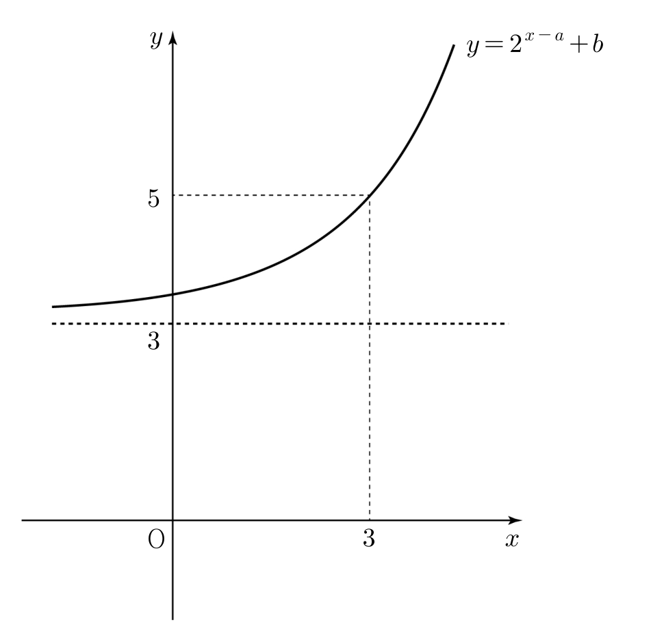
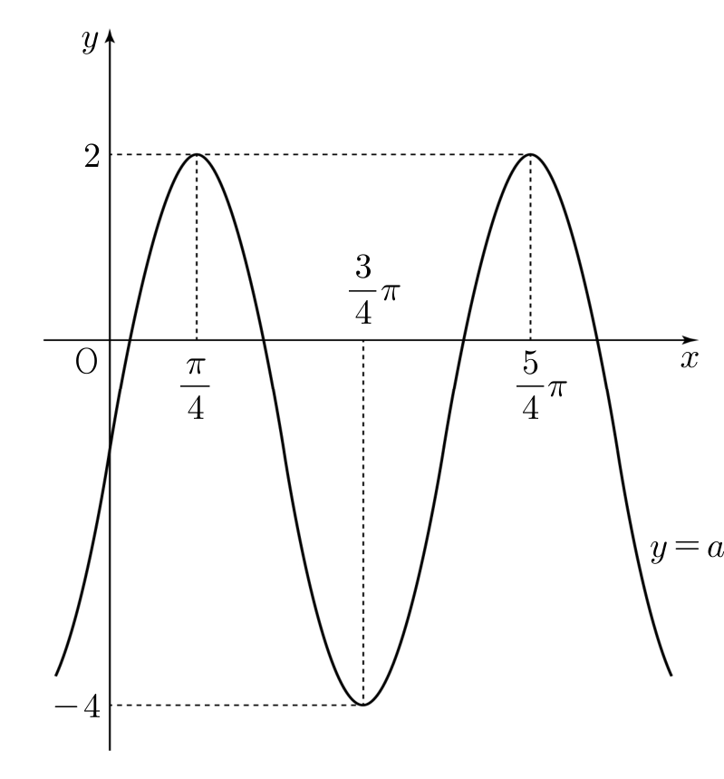

① $0$② $\frac{\pi }{6}$③ $\frac{\pi }{4}$④ $\frac{\pi }{3}$⑤ $\frac{\pi }{2}$
원본 정답 ④
원본 풀이 (내부용)[출제의도] 삼각함수가 포함된 방정식 계산하기
\(
0\le x\le\frac{\pi}{2}
\)
이므로
\(
-\frac{\pi}{6}\le x-\frac{\pi}{6}\le\frac{\pi}{3}
\)
이다.
\(
\sin\left(x-\frac{\pi}{6}\right)=\frac12
\)
에서
\(
x-\frac{\pi}{6}=\frac{\pi}{6}
\)
이므로
\(
x=\frac{\pi}{3}
\)
이다.
생성기 숫자판 1/6 · G2M1-02b#0방정식 $\cos 2x=0$의 해로 옳은 것을 고르세요. (단, $0\le x\le \frac{2}{3}\pi$)
① $\frac{\pi}{12}$② $\frac{\pi}{9}$③ $\frac{\pi}{6}$④ $\frac{\pi}{4}$⑤ $\frac{\pi}{3}$
정답④ $\frac{\pi}{4}$ $0\le x\le \frac{2}{3}\pi$에서 $2x$의 값의 범위는 $0$ 이상 $\frac{4}{3}\pi$ 이하 이 범위에서 $\cos t=0$인 $t$는 $t=\frac{\pi}{2}$뿐입니다. $2x=\frac{\pi}{2}$에서 $x=\frac{\pi}{4}$
숫자: 원본 6 1 2 0 2 → 쌍둥이 2 0 0 2 3 · 같은 수: 0 2
생성기 숫자판 2/6 · G2M1-02b#0방정식 $\cos 3x=\frac{1}{2}$의 해로 옳은 것을 고르세요. (단, $0\le x\le \frac{\pi}{3}$)
① $0$② $\frac{\pi}{18}$③ $\frac{\pi}{12}$④ $\frac{\pi}{9}$⑤ $\frac{\pi}{6}$
정답④ $\frac{\pi}{9}$ $0\le x\le \frac{\pi}{3}$에서 $3x$의 값의 범위는 $0$ 이상 $\pi$ 이하 이 범위에서 $\cos t=\frac{1}{2}$인 $t$는 $t=\frac{\pi}{3}$뿐입니다. $3x=\frac{\pi}{3}$에서 $x=\frac{\pi}{9}$
숫자: 원본 6 1 2 0 2 → 쌍둥이 3 1 2 0 3 · 같은 수: 0 1 2
생성기 숫자판 3/6 · G2M1-02b#0방정식 $\sin\left(x-\frac{\pi}{4}\right)=0$의 해로 옳은 것을 고르세요. (단, $0\le x\le \pi$)
① $\frac{\pi}{12}$② $\frac{\pi}{9}$③ $\frac{\pi}{6}$④ $\frac{\pi}{4}$⑤ $\frac{\pi}{3}$
정답④ $\frac{\pi}{4}$ $0\le x\le \pi$에서 $x-\frac{\pi}{4}$의 값의 범위는 $-\frac{\pi}{4}$ 이상 $\frac{3}{4}\pi$ 이하 이 범위에서 $\sin t=0$인 $t$는 $t=0$뿐입니다. $x-\frac{\pi}{4}=0$에서 $x=\frac{\pi}{4}$
숫자: 원본 6 1 2 0 2 → 쌍둥이 4 0 0 · 같은 수: 0
생성기 숫자판 4/6 · G2M1-02b#0방정식 $\cos\left(x-\frac{\pi}{6}\right)=1$의 해로 옳은 것을 고르세요. (단, $0\le x\le \pi$)
① $\frac{\pi}{18}$② $\frac{\pi}{12}$③ $\frac{\pi}{9}$④ $\frac{\pi}{6}$⑤ $\frac{\pi}{4}$
정답④ $\frac{\pi}{6}$ $0\le x\le \pi$에서 $x-\frac{\pi}{6}$의 값의 범위는 $-\frac{\pi}{6}$ 이상 $\frac{5}{6}\pi$ 이하 이 범위에서 $\cos t=1$인 $t$는 $t=0$뿐입니다. $x-\frac{\pi}{6}=0$에서 $x=\frac{\pi}{6}$
숫자: 원본 6 1 2 0 2 → 쌍둥이 6 1 0 · 같은 수: 0 1 6
생성기 숫자판 5/6 · G2M1-02b#0방정식 $\cos\left(x-\frac{\pi}{3}\right)=1$의 해로 옳은 것을 고르세요. (단, $0\le x\le \frac{\pi}{2}$)
① $\frac{\pi}{6}$② $\frac{\pi}{4}$③ $\frac{\pi}{3}$④ $\frac{5}{12}\pi$⑤ $\frac{\pi}{2}$
정답③ $\frac{\pi}{3}$ $0\le x\le \frac{\pi}{2}$에서 $x-\frac{\pi}{3}$의 값의 범위는 $-\frac{\pi}{3}$ 이상 $\frac{\pi}{6}$ 이하 이 범위에서 $\cos t=1$인 $t$는 $t=0$뿐입니다. $x-\frac{\pi}{3}=0$에서 $x=\frac{\pi}{3}$
숫자: 원본 6 1 2 0 2 → 쌍둥이 3 1 0 2 · 같은 수: 0 1 2
생성기 숫자판 6/6 · G2M1-02b#0방정식 $\sin\left(x-\frac{\pi}{3}\right)=\frac{\sqrt{2}}{2}$의 해로 옳은 것을 고르세요. (단, $0\le x\le \pi$)
① $\frac{5}{12}\pi$② $\frac{\pi}{2}$③ $\frac{7}{12}\pi$④ $\frac{2}{3}\pi$⑤ $\frac{3}{4}\pi$
정답③ $\frac{7}{12}\pi$ $0\le x\le \pi$에서 $x-\frac{\pi}{3}$의 값의 범위는 $-\frac{\pi}{3}$ 이상 $\frac{2}{3}\pi$ 이하 이 범위에서 $\sin t=\frac{\sqrt{2}}{2}$인 $t$는 $t=\frac{\pi}{4}$뿐입니다. $x-\frac{\pi}{3}=\frac{\pi}{4}$에서 $x=\frac{7}{12}\pi$
원본 (내부용)함수 $f ( x ) =\log_{ 3} ( x+12 ) +2$에 대하여 $f^{-1} ( 5 )$의 값은? [3점]
① $15$② $16$③ $17$④ $18$⑤ $19$
원본 정답 ①
원본 풀이 (내부용)[출제의도] 로그함수 이해하기
\(f^{-1}(5)=k\)라 하면 \(f(k)=5\)이다.
\(
f(k)=\log_3(k+12)+2=5
\)
이므로
\(
\log_3(k+12)=3,\qquad k+12=3^3=27
\)
이다. 따라서 \(k=15\)이다.
생성기 숫자판 1/6 · G2M1-01#10함수 $f\left(x\right)=\log_{3}\left(x+10\right)+2$에 대하여 $f^{-1}\left(5\right)$의 값으로 옳은 것을 고르세요.
① $13$② $14$③ $15$④ $16$⑤ $17$
정답⑤ $17$ $f^{-1}\left(5\right)=k$라 하면 $f\left(k\right)=5$ $\log_{3}\left(k+10\right)+2=5$에서 $\log_{3}\left(k+10\right)=3$ $k+10=3^{3}=27$이므로 $k=17$
원본 (내부용)$0 \le x \le 4$에서 정의된 함수 $f ( x ) =\log_{ 5} ( x+1 ) -2$의 최댓값은? [3점]
① $-2$② $-1$③ $0$④ $1$⑤ $2$
원본 정답 ②
원본 풀이 (내부용)[출제의도] 로그함수 이해하기
함수
\(
f(x)=\log_5(x+1)-2
\)
는 증가한다. 따라서 \(0\le x\le4\)에서 함수 \(f(x)=\log_5(x+1)-2\)는 \(x=4\)에서 최댓값을 갖는다.
\(
f(4)=\log_5 5-2=1-2=-1
\)
을 갖는다.
생성기 숫자판 1/6 · G2M1-01#9$0\le x\le 7$에서 정의된 함수 $y=\log_{2}\left(x+1\right)+3$의 최솟값으로 옳은 것을 고르세요.
① $0$② $1$③ $2$④ $3$⑤ $4$
정답④ $3$ 밑 $2$가 $1$보다 크므로 $x$의 값이 커질수록 $y$의 값도 커집니다. 따라서 $x=0$일 때 최솟값을 가지므로 $y=\log_{2}1+3$ $=0+3$ $=3$
숫자: 원본 0 4 5 1 2 → 쌍둥이 0 7 2 1 3 · 같은 수: 0 1 2
생성기 숫자판 2/6 · G2M1-01#9$1\le x\le 5$에서 정의된 함수 $y=\log_{5}x+2$의 최솟값으로 옳은 것을 고르세요.
① $-1$② $0$③ $1$④ $2$⑤ $3$
정답④ $2$ 밑 $5$가 $1$보다 크므로 $x$의 값이 커질수록 $y$의 값도 커집니다. 따라서 $x=1$일 때 최솟값을 가지므로 $y=\log_{5}1+2$ $=0+2$ $=2$
숫자: 원본 0 4 5 1 2 → 쌍둥이 1 5 5 2 · 같은 수: 1 2 5
생성기 숫자판 3/6 · G2M1-01#9$4\le x\le 11$에서 정의된 함수 $y=\log_{3}\left(x-2\right)-2$의 최댓값으로 옳은 것을 고르세요.
① $-4$② $-3$③ $-2$④ $-1$⑤ $0$
정답⑤ $0$ 밑 $3$이 $1$보다 크므로 $x$의 값이 커질수록 $y$의 값도 커집니다. 따라서 $x=11$일 때 최댓값을 가지므로 $y=\log_{3}9-2$ $=2-2$ $=0$
숫자: 원본 0 4 5 1 2 → 쌍둥이 4 11 3 2 2 · 같은 수: 2 4
생성기 숫자판 4/6 · G2M1-01#9$20\le x\le 27$에서 정의된 함수 $y=\log_{5}\left(x-2\right)-3$의 최댓값으로 옳은 것을 고르세요.
① $-3$② $-2$③ $-1$④ $0$⑤ $1$
정답③ $-1$ 밑 $5$가 $1$보다 크므로 $x$의 값이 커질수록 $y$의 값도 커집니다. 따라서 $x=27$일 때 최댓값을 가지므로 $y=\log_{5}25-3$ $=2-3$ $=-1$
숫자: 원본 0 4 5 1 2 → 쌍둥이 20 27 5 2 3 · 같은 수: 2 5
생성기 숫자판 5/6 · G2M1-01#9$12\le x\le 22$에서 정의된 함수 $y=\log_{5}\left(x+3\right)+4$의 최댓값으로 옳은 것을 고르세요.
① $5$② $6$③ $7$④ $8$⑤ $9$
정답② $6$ 밑 $5$가 $1$보다 크므로 $x$의 값이 커질수록 $y$의 값도 커집니다. 따라서 $x=22$일 때 최댓값을 가지므로 $y=\log_{5}25+4$ $=2+4$ $=6$
숫자: 원본 0 4 5 1 2 → 쌍둥이 12 22 5 3 4 · 같은 수: 4 5
생성기 숫자판 6/6 · G2M1-01#9$1\le x\le 2$에서 정의된 함수 $y=\log_{3}\left(x+1\right)-2$의 최댓값으로 옳은 것을 고르세요.
① $-3$② $-2$③ $-1$④ $0$⑤ $1$
정답③ $-1$ 밑 $3$이 $1$보다 크므로 $x$의 값이 커질수록 $y$의 값도 커집니다. 따라서 $x=2$일 때 최댓값을 가지므로 $y=\log_{3}3-2$ $=1-2$ $=-1$
생성기 숫자판 1/6 · G2M1-04b#10$\sqrt{\left(-3\right)^{6}}+\left(\sqrt[3]{5}-\sqrt[3]{4}\right)\left(\sqrt[3]{25}+\sqrt[3]{20}+\sqrt[3]{16}\right)$의 값으로 옳은 것을 고르세요.
① $24$② $26$③ $28$④ $30$⑤ $32$
정답③ $28$ $\sqrt{\left(-3\right)^{6}}=\sqrt{3^{6}}=27$ $\left(\sqrt[3]{5}-\sqrt[3]{4}\right)\left(\sqrt[3]{25}+\sqrt[3]{20}+\sqrt[3]{16}\right)=\left(\sqrt[3]{5}\right)^{3}-\left(\sqrt[3]{4}\right)^{3}=5-4=1$ 따라서 구하는 값은 $27+1=28$
생성기 숫자판 2/6 · G2M1-04b#10$\sqrt{\left(-2\right)^{6}}+\left(\sqrt[3]{5}-\sqrt[3]{4}\right)\left(\sqrt[3]{25}+\sqrt[3]{20}+\sqrt[3]{16}\right)$의 값으로 옳은 것을 고르세요.
① $7$② $9$③ $11$④ $13$⑤ $15$
정답② $9$ $\sqrt{\left(-2\right)^{6}}=\sqrt{2^{6}}=8$ $\left(\sqrt[3]{5}-\sqrt[3]{4}\right)\left(\sqrt[3]{25}+\sqrt[3]{20}+\sqrt[3]{16}\right)=\left(\sqrt[3]{5}\right)^{3}-\left(\sqrt[3]{4}\right)^{3}=5-4=1$ 따라서 구하는 값은 $8+1=9$
생성기 숫자판 3/6 · G2M1-04b#10$\sqrt{\left(-3\right)^{4}}+\left(\sqrt[3]{4}-\sqrt[3]{3}\right)\left(\sqrt[3]{16}+\sqrt[3]{12}+\sqrt[3]{9}\right)$의 값으로 옳은 것을 고르세요.
① $8$② $10$③ $12$④ $14$⑤ $16$
정답② $10$ $\sqrt{\left(-3\right)^{4}}=\sqrt{3^{4}}=9$ $\left(\sqrt[3]{4}-\sqrt[3]{3}\right)\left(\sqrt[3]{16}+\sqrt[3]{12}+\sqrt[3]{9}\right)=\left(\sqrt[3]{4}\right)^{3}-\left(\sqrt[3]{3}\right)^{3}=4-3=1$ 따라서 구하는 값은 $9+1=10$
생성기 숫자판 4/6 · G2M1-04b#10$\sqrt{\left(-2\right)^{4}}+\left(\sqrt[3]{5}-\sqrt[3]{2}\right)\left(\sqrt[3]{25}+\sqrt[3]{10}+\sqrt[3]{4}\right)$의 값으로 옳은 것을 고르세요.
① $3$② $5$③ $7$④ $9$⑤ $11$
정답③ $7$ $\sqrt{\left(-2\right)^{4}}=\sqrt{2^{4}}=4$ $\left(\sqrt[3]{5}-\sqrt[3]{2}\right)\left(\sqrt[3]{25}+\sqrt[3]{10}+\sqrt[3]{4}\right)=\left(\sqrt[3]{5}\right)^{3}-\left(\sqrt[3]{2}\right)^{3}=5-2=3$ 따라서 구하는 값은 $4+3=7$
생성기 숫자판 5/6 · G2M1-04b#10$\sqrt{\left(-3\right)^{4}}+\left(\sqrt[3]{4}-\sqrt[3]{2}\right)\left(\sqrt[3]{16}+\sqrt[3]{8}+\sqrt[3]{4}\right)$의 값으로 옳은 것을 고르세요.
① $11$② $13$③ $15$④ $17$⑤ $19$
정답① $11$ $\sqrt{\left(-3\right)^{4}}=\sqrt{3^{4}}=9$ $\left(\sqrt[3]{4}-\sqrt[3]{2}\right)\left(\sqrt[3]{16}+\sqrt[3]{8}+\sqrt[3]{4}\right)=\left(\sqrt[3]{4}\right)^{3}-\left(\sqrt[3]{2}\right)^{3}=4-2=2$ 따라서 구하는 값은 $9+2=11$
생성기 숫자판 6/6 · G2M1-04b#10$\sqrt{\left(-2\right)^{6}}+\left(\sqrt[3]{5}-\sqrt[3]{2}\right)\left(\sqrt[3]{25}+\sqrt[3]{10}+\sqrt[3]{4}\right)$의 값으로 옳은 것을 고르세요.
① $5$② $7$③ $9$④ $11$⑤ $13$
정답④ $11$ $\sqrt{\left(-2\right)^{6}}=\sqrt{2^{6}}=8$ $\left(\sqrt[3]{5}-\sqrt[3]{2}\right)\left(\sqrt[3]{25}+\sqrt[3]{10}+\sqrt[3]{4}\right)=\left(\sqrt[3]{5}\right)^{3}-\left(\sqrt[3]{2}\right)^{3}=5-2=3$ 따라서 구하는 값은 $8+3=11$
원본 (내부용)함수 $y=2^{x-a} +b$의 그래프가 그림과 같을 때, 두 상수 $a$, $b$에 대하여 $a+b$의 값은? (단, 직선 $y=3$은 그래프의 점근선이다.) [3점] $y$ $x$ $\mathrm{O}$ $3$ $3$ $5$ $y=2^{x-a} +b$

① $3$② $5$③ $7$④ $9$⑤ $11$
원본 정답 ②
원본 풀이 (내부용)[출제의도] 지수함수의 그래프 이해하기
함수 \(y=2^{x-a}+b\)의 그래프의 점근선이 \(y=3\)이므로 \(b=3\)이다. 함수 \(y=2^{x-a}+3\)의 그래프가 점 \((3,5)\)를 지나므로
\(
5=2^{3-a}+3
\)
에서 \(a=2\)이다. 따라서 \(a+b=5\)이다.
생성기 숫자판 1/6 · G2f-13#0함수 $y=4^{x-a}+b$의 그래프가 그림과 같고 점 $(7, 5)$를 지날 때, 두 상수 $a$, $b$에 대하여 $a+b$의 값으로 옳은 것을 고르세요. (단, 직선 $y=1$은 그래프의 점근선입니다.)
① $5$② $6$③ $7$④ $8$⑤ $9$
정답③ $7$ 점근선이 직선 $y=1$이므로 $b=1$ 그래프가 점 $\left(7,\ 5\right)$를 지나므로 $4^{7-6}+1=5$, $4^{7-6}=4$ $7-6=1$에서 $a=6$ 따라서 $a+b=6+1=7$
숫자: 원본 2 3 3 3 5 2 → 쌍둥이 4 7 5 1 · 같은 수: 5
생성기 숫자판 2/6 · G2f-13#0함수 $y=4^{x-a}+b$의 그래프가 그림과 같고 점 $(6, 10)$를 지날 때, 두 상수 $a$, $b$에 대하여 $a+b$의 값으로 옳은 것을 고르세요. (단, 직선 $y=6$은 그래프의 점근선입니다.)
① $9$② $10$③ $11$④ $12$⑤ $13$
정답③ $11$ 점근선이 직선 $y=6$이므로 $b=6$ 그래프가 점 $\left(6,\ 10\right)$를 지나므로 $4^{6-5}+6=10$, $4^{6-5}=4$ $6-5=1$에서 $a=5$ 따라서 $a+b=5+6=11$
숫자: 원본 2 3 3 3 5 2 → 쌍둥이 4 6 10 6
생성기 숫자판 3/6 · G2f-13#0함수 $y=4^{x-a}+b$의 그래프가 그림과 같고 점 $(9, 5)$를 지날 때, 두 상수 $a$, $b$에 대하여 $a+b$의 값으로 옳은 것을 고르세요. (단, 직선 $y=1$은 그래프의 점근선입니다.)
① $7$② $8$③ $9$④ $10$⑤ $11$
정답③ $9$ 점근선이 직선 $y=1$이므로 $b=1$ 그래프가 점 $\left(9,\ 5\right)$를 지나므로 $4^{9-8}+1=5$, $4^{9-8}=4$ $9-8=1$에서 $a=8$ 따라서 $a+b=8+1=9$
숫자: 원본 2 3 3 3 5 2 → 쌍둥이 4 9 5 1 · 같은 수: 5
생성기 숫자판 4/6 · G2f-13#0함수 $y=4^{x-a}+b$의 그래프가 그림과 같고 점 $(6, 8)$를 지날 때, 두 상수 $a$, $b$에 대하여 $a+b$의 값으로 옳은 것을 고르세요. (단, 직선 $y=4$는 그래프의 점근선입니다.)
① $7$② $8$③ $9$④ $10$⑤ $11$
정답③ $9$ 점근선이 직선 $y=4$이므로 $b=4$ 그래프가 점 $\left(6,\ 8\right)$를 지나므로 $4^{6-5}+4=8$, $4^{6-5}=4$ $6-5=1$에서 $a=5$ 따라서 $a+b=5+4=9$
숫자: 원본 2 3 3 3 5 2 → 쌍둥이 4 6 8 4
생성기 숫자판 5/6 · G2f-13#0함수 $y=4^{x-a}+b$의 그래프가 그림과 같고 점 $(5, 11)$를 지날 때, 두 상수 $a$, $b$에 대하여 $a+b$의 값으로 옳은 것을 고르세요. (단, 직선 $y=7$은 그래프의 점근선입니다.)
① $9$② $10$③ $11$④ $12$⑤ $13$
정답③ $11$ 점근선이 직선 $y=7$이므로 $b=7$ 그래프가 점 $\left(5,\ 11\right)$를 지나므로 $4^{5-4}+7=11$, $4^{5-4}=4$ $5-4=1$에서 $a=4$ 따라서 $a+b=4+7=11$
숫자: 원본 2 3 3 3 5 2 → 쌍둥이 4 5 11 7 · 같은 수: 5
생성기 숫자판 6/6 · G2f-13#0함수 $y=4^{x-a}+b$의 그래프가 그림과 같고 점 $(4, 5)$를 지날 때, 두 상수 $a$, $b$에 대하여 $a+b$의 값으로 옳은 것을 고르세요. (단, 직선 $y=1$은 그래프의 점근선입니다.)
① $2$② $3$③ $4$④ $5$⑤ $6$
정답③ $4$ 점근선이 직선 $y=1$이므로 $b=1$ 그래프가 점 $\left(4,\ 5\right)$를 지나므로 $4^{4-3}+1=5$, $4^{4-3}=4$ $4-3=1$에서 $a=3$ 따라서 $a+b=3+1=4$
원본 풀이 (내부용)[출제의도] 삼각함수 이해하기
\(
\sin^2\theta+\cos^2\theta=1
\)
이므로
\(
\sin^2\theta=1-\cos^2\theta
=1-\frac19
=\frac89
\)
이다. \(\pi<\theta<\frac32\pi\)에서 \(\sin\theta<0\)이므로
\(
\sin\theta=-\frac{2\sqrt2}{3}
\)
이다.
\(
\tan\theta=\frac{\sin\theta}{\cos\theta}
=\frac{-\frac{2\sqrt2}{3}}{-\frac13}
=2\sqrt2
\)
이다. 따라서
\(
\tan\theta-\sin\theta
=2\sqrt2-\left(-\frac{2\sqrt2}{3}\right)
=\frac{8\sqrt2}{3}
\)
이다.
생성기 숫자판 1/6 · G2M1-02b#1$\frac{\pi}{2}<\theta<\pi$인 $\theta$에 대하여 $\cos\theta=-\frac{1}{3}$일 때, $\tan\theta-\sin\theta$의 값으로 옳은 것을 고르세요.
① $-\frac{11\sqrt{2}}{3}$② $-\frac{10\sqrt{2}}{3}$③ $-3\sqrt{2}$④ $-\frac{8\sqrt{2}}{3}$⑤ $-\frac{7\sqrt{2}}{3}$
정답④ $-\frac{8\sqrt{2}}{3}$ $\frac{\pi}{2}<\theta<\pi$이므로 $\sin\theta>0$ $\sin\theta=\sqrt{1-\left(-\frac{1}{3}\right)^{2}}=\frac{2\sqrt{2}}{3}$ $\tan\theta=\frac{\sin\theta}{\cos\theta}=-2\sqrt{2}$ 따라서 $\tan\theta-\sin\theta=-2\sqrt{2}-\frac{2\sqrt{2}}{3}=-\frac{8\sqrt{2}}{3}$
숫자: 원본 1 3 3 2 → 쌍둥이 2 1 3 · 같은 수: 1 2 3
생성기 숫자판 2/6 · G2M1-02b#1$\frac{3}{2}\pi<\theta<2\pi$인 $\theta$에 대하여 $\sin\theta=-\frac{2}{3}$일 때, $\tan\theta-\sin\theta$의 값으로 옳은 것을 고르세요.
① $\frac{4}{3}-\frac{4\sqrt{5}}{5}$② $\frac{2}{3}-\frac{2\sqrt{5}}{5}$③ $0$④ $-\frac{2}{3}+\frac{2\sqrt{5}}{5}$⑤ $-\frac{4}{3}+\frac{4\sqrt{5}}{5}$
정답② $\frac{2}{3}-\frac{2\sqrt{5}}{5}$ $\frac{3}{2}\pi<\theta<2\pi$이므로 $\cos\theta>0$ $\cos\theta=\sqrt{1-\left(-\frac{2}{3}\right)^{2}}=\frac{\sqrt{5}}{3}$ $\tan\theta=\frac{\sin\theta}{\cos\theta}=-\frac{2\sqrt{5}}{5}$ 따라서 $\tan\theta-\sin\theta=-\frac{2\sqrt{5}}{5}-\left(-\frac{2}{3}\right)=\frac{2}{3}-\frac{2\sqrt{5}}{5}$
숫자: 원본 1 3 3 2 → 쌍둥이 3 2 2 2 3 · 같은 수: 2 3
생성기 숫자판 3/6 · G2M1-02b#1$\frac{\pi}{2}<\theta<\pi$인 $\theta$에 대하여 $\sin\theta=\frac{3}{5}$일 때, $\tan\theta-\sin\theta$의 값으로 옳은 것을 고르세요.
① $-\frac{27}{20}$② $-\frac{13}{10}$③ $-\frac{5}{4}$④ $-\frac{6}{5}$⑤ $-\frac{23}{20}$
정답① $-\frac{27}{20}$ $\frac{\pi}{2}<\theta<\pi$이므로 $\cos\theta<0$ $\cos\theta=-\sqrt{1-\left(\frac{3}{5}\right)^{2}}=-\frac{4}{5}$ $\tan\theta=\frac{\sin\theta}{\cos\theta}=-\frac{3}{4}$ 따라서 $\tan\theta-\sin\theta=-\frac{3}{4}-\frac{3}{5}=-\frac{27}{20}$
숫자: 원본 1 3 3 2 → 쌍둥이 2 3 5 · 같은 수: 2 3
생성기 숫자판 4/6 · G2M1-02b#1$\frac{\pi}{2}<\theta<\pi$인 $\theta$에 대하여 $\sin\theta=\frac{12}{13}$일 때, $\tan\theta-\sin\theta$의 값으로 옳은 것을 고르세요.
① $-\frac{44}{13}$② $-\frac{219}{65}$③ $-\frac{218}{65}$④ $-\frac{217}{65}$⑤ $-\frac{216}{65}$
정답⑤ $-\frac{216}{65}$ $\frac{\pi}{2}<\theta<\pi$이므로 $\cos\theta<0$ $\cos\theta=-\sqrt{1-\left(\frac{12}{13}\right)^{2}}=-\frac{5}{13}$ $\tan\theta=\frac{\sin\theta}{\cos\theta}=-\frac{12}{5}$ 따라서 $\tan\theta-\sin\theta=-\frac{12}{5}-\frac{12}{13}=-\frac{216}{65}$
숫자: 원본 1 3 3 2 → 쌍둥이 2 12 13 · 같은 수: 2
생성기 숫자판 5/6 · G2M1-02b#1$\frac{\pi}{2}<\theta<\pi$인 $\theta$에 대하여 $\cos\theta=-\frac{5}{13}$일 때, $\tan\theta-\sin\theta$의 값으로 옳은 것을 고르세요.
① $-\frac{217}{65}$② $-\frac{216}{65}$③ $-\frac{43}{13}$④ $-\frac{214}{65}$⑤ $-\frac{213}{65}$
정답② $-\frac{216}{65}$ $\frac{\pi}{2}<\theta<\pi$이므로 $\sin\theta>0$ $\sin\theta=\sqrt{1-\left(-\frac{5}{13}\right)^{2}}=\frac{12}{13}$ $\tan\theta=\frac{\sin\theta}{\cos\theta}=-\frac{12}{5}$ 따라서 $\tan\theta-\sin\theta=-\frac{12}{5}-\frac{12}{13}=-\frac{216}{65}$
숫자: 원본 1 3 3 2 → 쌍둥이 2 5 13 · 같은 수: 2
생성기 숫자판 6/6 · G2M1-02b#1$\frac{\pi}{2}<\theta<\pi$인 $\theta$에 대하여 $\sin\theta=\frac{2}{3}$일 때, $\tan\theta-\sin\theta$의 값으로 옳은 것을 고르세요.
① $-\frac{4\sqrt{5}}{5}-\frac{4}{3}$② $-\frac{2\sqrt{5}}{5}-\frac{2}{3}$③ $0$④ $\frac{2}{3}+\frac{2\sqrt{5}}{5}$⑤ $\frac{4}{3}+\frac{4\sqrt{5}}{5}$
정답② $-\frac{2\sqrt{5}}{5}-\frac{2}{3}$ $\frac{\pi}{2}<\theta<\pi$이므로 $\cos\theta<0$ $\cos\theta=-\sqrt{1-\left(\frac{2}{3}\right)^{2}}=-\frac{\sqrt{5}}{3}$ $\tan\theta=\frac{\sin\theta}{\cos\theta}=-\frac{2\sqrt{5}}{5}$ 따라서 $\tan\theta-\sin\theta=-\frac{2\sqrt{5}}{5}-\frac{2}{3}=-\frac{2\sqrt{5}}{5}-\frac{2}{3}$
숫자: 원본 1 3 3 2 → 쌍둥이 2 2 3 · 같은 수: 2 3
13. 2019년 6월 나형 13번 · 3점 · 수학Ⅰ 지수·로그 · G2M1-04#20
원본 (내부용)함수 $f ( x ) = ( \frac{1}{5} )^{ x^{2} -4x+1}$은 $x=a$에서 최댓값 $M$을 갖는다. $a+M$의 값은? [3점]
① $127$② $129$③ $131$④ $133$⑤ $135$
원본 정답 ①
원본 풀이 (내부용)[출제의도] 지수함수의 그래프를 이용하여 최댓값 문제 해결하기
함수
\(
f(x)=\left(\frac15\right)^{x^2-4x+1}
\)
은 \(x^2-4x+1\)이 최솟값을 가질 때 최댓값을 갖는다.
\(
x^2-4x+1=(x-2)^2-3\ge-3
\)
이므로 함수 \(f(x)\)는 \(x=2\)에서 최댓값을 갖는다.
\(
\left(\frac15\right)^{-3}=125
\)
를 갖는다. 따라서 \(a+M=2+125=127\)이다.
정답② $27$ $x^{2}-4x+2=\left(x-2\right)^{2}-2$이므로 지수는 $x=2$일 때 최솟값 $-2$를 갖습니다. 밑 $\frac{1}{5}$이 $0$과 $1$ 사이이므로 지수가 가장 작을 때 $f\left(x\right)$가 가장 큽니다. $a=2$, $M=\left(\frac{1}{5}\right)^{-2}=25$ 따라서 $a+M=27$
정답④ $6$ $x^{2}-6x+8=\left(x-3\right)^{2}-1$이므로 지수는 $x=3$일 때 최솟값 $-1$을 갖습니다. 밑 $\frac{1}{3}$이 $0$과 $1$ 사이이므로 지수가 가장 작을 때 $f\left(x\right)$가 가장 큽니다. $a=3$, $M=\left(\frac{1}{3}\right)^{-1}=3$ 따라서 $a+M=6$
정답② $6$ $x^{2}-8x+15=\left(x-4\right)^{2}-1$이므로 지수는 $x=4$일 때 최솟값 $-1$을 갖습니다. 밑 $\frac{1}{2}$이 $0$과 $1$ 사이이므로 지수가 가장 작을 때 $f\left(x\right)$가 가장 큽니다. $a=4$, $M=\left(\frac{1}{2}\right)^{-1}=2$ 따라서 $a+M=6$
정답② $35$ $x^{2}-6x+4=\left(x-3\right)^{2}-5$이므로 지수는 $x=3$일 때 최솟값 $-5$를 갖습니다. 밑 $\frac{1}{2}$이 $0$과 $1$ 사이이므로 지수가 가장 작을 때 $f\left(x\right)$가 가장 큽니다. $a=3$, $M=\left(\frac{1}{2}\right)^{-5}=32$ 따라서 $a+M=35$
정답② $85$ $x^{2}-8x+12=\left(x-4\right)^{2}-4$이므로 지수는 $x=4$일 때 최솟값 $-4$를 갖습니다. 밑 $\frac{1}{3}$이 $0$과 $1$ 사이이므로 지수가 가장 작을 때 $f\left(x\right)$가 가장 큽니다. $a=4$, $M=\left(\frac{1}{3}\right)^{-4}=81$ 따라서 $a+M=85$
정답③ $20$ $x^{2}-8x+12=\left(x-4\right)^{2}-4$이므로 지수는 $x=4$일 때 최솟값 $-4$를 갖습니다. 밑 $\frac{1}{2}$이 $0$과 $1$ 사이이므로 지수가 가장 작을 때 $f\left(x\right)$가 가장 큽니다. $a=4$, $M=\left(\frac{1}{2}\right)^{-4}=16$ 따라서 $a+M=20$
숫자: 원본 1 5 4 1 → 쌍둥이 1 2 8 12 · 같은 수: 1
14. 2019년 6월 나형 14번 · 4점 · 수학Ⅰ 삼각함수 · 4점 쌍둥이
원본 (내부용)함수 $y=asinbx+c$의 그래프가 그림과 같을 때, 세 상수 $a$, $b$, $c$에 대하여 $2a+b+c$의 값은? (단, $a>0$, $b>0$) [4점] $x$ $y$ $\mathrm{O}$ $y=asinbx+c$ $2$ $-4$ $\frac{ \pi }{4 }$ $\frac{3}{4} \pi$ $\frac{5}{4} \pi$

① $1$② $3$③ $5$④ $7$⑤ $9$
원본 정답 ④
원본 풀이 (내부용)[출제의도] 삼각함수의 그래프 이해하기
함수 \(y=a\sin bx+c\)의 그래프에서 최댓값과 최솟값이 각각 \(2,-4\)이고 \(a>0\)이므로
\(
a+c=2,\qquad -a+c=-4
\)
에서 \(a=3,\ c=-1\)이다.
함수 \(y=a\sin bx+c\)의 주기는 \(\pi\)이고 \(b>0\)이므로
\(
\frac{2\pi}{b}=\pi
\)
에서 \(b=2\)이다. 따라서
\(
2a+b+c=6+2+(-1)=7
\)
이다.
쌍둥이 1/5 · 4점 쌍둥이함수 $y=a\sin bx+c$의 그래프가 그림과 같을 때, 세 상수 $a,b,c$에 대하여 $a+2b-c$의 값을 구하시오. (단, $a>0$, $b>0$) [4점]
① $9$② $11$③ $13$④ $15$⑤ $17$
정답③ $13$ 그래프의 최댓값은 $1$, 최솟값은 $-7$이므로 $a=\frac{1-(-7)}{2}=4$, $c=\frac{1+(-7)}{2}=-3$이다. 연속한 두 최댓값의 $x$좌표는 $\frac{\pi}{6}$, $\frac{5 \pi}{6}$이므로 주기는 $\frac{2 \pi}{3}=\frac{2\pi}{b}$에서 $b=3$이다. 따라서 $a+2b-c=4+2\times3-(-3)=13$이다.
원본 (내부용)반지름의 길이가 $r$인 원형 도선에 세기가 $I$인 전류가 흐를 때, 원형 도선의 중심에서 수직 거리 $x$만큼 떨어진 지점에서의 자기장의 세기를 $B$라 하면 다음과 같은 관계식이 성립한다고 한다. $B = \frac{k I r^{ 2}}{2(x^{ 2} +r^{ 2} )^{\frac{3}{2}}}$ (단, $k$는 상수이다.) 전류의 세기가 $I_{0} ( I_{0} >0 )$으로 일정할 때, 반지름의 길이가 $r_1$인 원형 도선의 중심에서 수직 거리 $x_1$만큼 떨어진 지점에서의 자기장의 세기를 $B_1$, 반지름의 길이가 $3r_1$인 원형 도선의 중심에서 수직 거리 $3x_1$만큼 떨어진 지점에서의 자기장의 세기를 $B_2$라 하자. $\frac{B_2}{B_1 }$의 값은? (단, 전류의 세기의 단위는 $\mathrm{A}$, 자기장의 세기의 단위는 $\mathrm{T}$, 길이와 거리의 단위는 $\mathrm{m}$이다.) [4점]
① $\frac{1}{6}$② $\frac{1}{4}$③ $\frac{1}{3}$④ $\frac{5}{12}$⑤ $\frac{1}{2}$
원본 정답 ③
원본 풀이 (내부용)[출제의도] 지수법칙을 이용하여 실생활 문제 해결하기
\(
B_1=\frac{kI_0r_1^2}{2(x_1^2+r_1^2)^{\frac32}},
\)
\(
\begin{aligned}
B_2
&=\frac{kI_0(3r_1)^2}{2\{(3x_1)^2+(3r_1)^2\}^{\frac32}}\\
&=\frac{kI_0\times9r_1^2}{2(9x_1^2+9r_1^2)^{\frac32}}\\
&=\frac{9kI_0r_1^2}{2\times9^{\frac32}(x_1^2+r_1^2)^{\frac32}}\\
&=\frac{kI_0r_1^2}{6(x_1^2+r_1^2)^{\frac32}}\\
&=\frac13B_1
\end{aligned}
\)
이므로
\(
\frac{B_2}{B_1}=\frac13
\)
이다.
쌍둥이 1/5 · 4점 쌍둥이반지름 $r$인 원형 도선에 전류 $I$가 흐를 때 중심에서 수직 거리 $x$인 점의 자기장 세기는 $B=\frac{kIr^2}{2(x^2+r^2)\sqrt{x^2+r^2}}$이다. 전류가 일정하고 두 번째 도선의 반지름과 거리가 각각 첫 번째의 $2$배이면 $B_2/B_1$은 얼마인가?
① $\frac{1}{4}$② $\frac{3}{8}$③ $\frac{1}{2}$④ $\frac{5}{8}$⑤ $\frac{3}{4}$
정답③ $\frac{1}{2}$ $S=x_1^2+r_1^2$라 두면 첫 자기장은 $kIr_1^2/(2S\sqrt S)$이다. 반지름과 거리를 $2$배로 하면 분자는 $2^2$배, $(x^2+r^2)\sqrt{x^2+r^2}$은 $2^3$배가 된다. 따라서 $B_2/B_1=2^2/2^3=1/2$이다.
쌍둥이 2/5 · 4점 쌍둥이반지름 $r$인 원형 도선에 전류 $I$가 흐를 때 중심에서 수직 거리 $x$인 점의 자기장 세기는 $B=\frac{kIr^2}{2(x^2+r^2)\sqrt{x^2+r^2}}$이다. 전류가 일정하고 두 번째 도선의 반지름과 거리가 각각 첫 번째의 $4$배이면 $B_2/B_1$은 얼마인가?
① $\frac{1}{8}$② $\frac{3}{16}$③ $\frac{1}{4}$④ $\frac{5}{16}$⑤ $\frac{3}{8}$
정답③ $\frac{1}{4}$ 반지름과 거리를 $4$배로 하면 분자는 $4^2$배, $(x^2+r^2)\sqrt{x^2+r^2}$은 $4^3$배가 된다. 따라서 $B_2/B_1=4^2/4^3=1/4$이다.
쌍둥이 3/5 · 4점 쌍둥이반지름 $r$인 원형 도선에 전류 $I$가 흐를 때 중심에서 수직 거리 $x$인 점의 자기장 세기는 $B=\frac{kIr^2}{2(x^2+r^2)\sqrt{x^2+r^2}}$이다. 전류가 일정하고 두 번째 도선의 반지름과 거리가 각각 첫 번째의 $5$배이면 $B_2/B_1$은 얼마인가?
① $\frac{1}{10}$② $\frac{3}{20}$③ $\frac{1}{5}$④ $\frac{1}{4}$⑤ $\frac{3}{10}$
정답③ $\frac{1}{5}$ 반지름과 거리를 $5$배로 하면 분자는 $5^2$배, $(x^2+r^2)\sqrt{x^2+r^2}$은 $5^3$배가 된다. 따라서 $B_2/B_1=5^2/5^3=1/5$이다.
쌍둥이 4/5 · 4점 쌍둥이원형 도선 중심에서 수직 거리 $x$인 점의 자기장 세기는 $B=\frac{kIr^2}{2(x^2+r^2)^{3/2}}$입니다. 전류는 일정하고 두 번째 도선의 반지름과 중심에서의 거리가 각각 첫 번째의 $6$배일 때 $B_2/B_1$을 구하세요.
① $1/8$② $1/7$③ $1/6$④ $1/5$⑤ $1/4$
정답③ $1/6$ 반지름의 배율이 6이므로 분자는 36배가 됩니다. 분모 안의 $x^2+r^2$은 36배가 되고 그 $3/2$제곱은 216배가 됩니다. $B_2/B_1=36/216=1/6$입니다.
쌍둥이 5/5 · 4점 쌍둥이원형 도선 중심에서 수직 거리 $x$인 점의 자기장 세기는 $B=\frac{kIr^2}{2(x^2+r^2)^{3/2}}$입니다. 전류는 일정하고 두 번째 도선의 반지름과 중심에서의 거리가 각각 첫 번째의 $7$배일 때 $B_2/B_1$을 구하세요.
① $1/9$② $1/8$③ $1/7$④ $1/6$⑤ $1/5$
정답③ $1/7$ 반지름의 배율이 7이므로 분자는 49배가 됩니다. 분모 안의 $x^2+r^2$은 49배가 되고 그 $3/2$제곱은 343배가 됩니다. $B_2/B_1=49/343=1/7$입니다.
원본 (내부용)두 양수 $a$, $b$($b != 1$)가 다음 조건을 만족시킬 때, $a^{2} +b^{2}$의 값은? [4점] (가) $( \log_{ 2} a ) ( \log_{ b} 3 ) =0$ (나) $\log_{ 2} a+\log_{ b} 3=2$
① $3$② $4$③ $5$④ $6$⑤ $7$
원본 정답 ②
원본 풀이 (내부용)[출제의도] 로그의 정의를 이용하여 문제 해결하기
조건 (가)에서 \((\log_2a)(\log_b3)=0\)이므로
\(
\log_2a=0
\)
또는 \(\log_b3=0\)이다.
\(\log_b3=0\)을 만족시키는 \(b\)는 존재하지 않는다. 따라서 \(\log_2a=0\)이므로 \(a=1\)이다.
조건 (나)에서 \(\log_b3=2\)이므로 \(b^2=3\)이다. 그러므로
\(
a^2+b^2=1+3=4
\)
이다.
[다른 풀이]
\(\log_2a\)와 \(\log_b3\)을 두 근으로 하고 최고차항의 계수가 1인 이차방정식은
\(
x^2-(\log_2a+\log_b3)x+(\log_2a)(\log_b3)=0
\)
이다.
\(
x^2-2x=0,\qquad x=0,\ 2
\)
따라서 \(\log_2a=0,\ \log_b3=2\) 또는 \(\log_2a=2,\ \log_b3=0\)이다. \(\log_b3=0\)을 만족시키는 \(b\)는 존재하지 않으므로 \(\log_2a=0,\ \log_b3=2\)이다.
그러므로 \(a=1,\ b^2=3\)이고 \(a^2+b^2=4\)이다.
쌍둥이 1/5 · 4점 쌍둥이두 양수 $a$, $b\ (b\ne1)$가 다음 조건을 만족시킬 때, $a+b$의 값으로 옳은 것을 고르세요. (가) $(\log_2a)(\log_b8)=0$ (나) $\log_2a+\log_b8=3$
쌍둥이 2/5 · 4점 쌍둥이두 양수 $a$, $b\ \left(b\ne 1\right)$가 다음 조건을 만족시킬 때, $a^{2}+b^{2}$의 값으로 옳은 것을 고르세요. (가) $\left(\log_{3}a\right)\left(\log_{b}5\right)=0$ (나) $\log_{3}a+\log_{b}5=2$
쌍둥이 3/5 · 4점 쌍둥이두 양수 $a$, $b\ \left(b\ne 1\right)$가 다음 조건을 만족시킬 때, $a^{2}+b^{2}$의 값으로 옳은 것을 고르세요. (가) $\left(\log_{2}a\right)\left(\log_{b}7\right)=0$ (나) $\log_{2}a+\log_{b}7=2$
쌍둥이 4/5 · 4점 쌍둥이두 양수 $a$, $b\ \left(b\ne 1\right)$가 다음 조건을 만족시킬 때, $a^{2}+b^{2}$의 값으로 옳은 것을 고르세요. (가) $\left(\log_{5}a\right)\left(\log_{b}8\right)=0$ (나) $\log_{5}a+\log_{b}8=3$
원본 (내부용)다음은 $0< \theta <2 \pi$에서 $3+2\sin^{2} \theta + \frac{1}{3-2\cos^{2} \theta }$의 최솟값을 구하는 과정이다. $3+2\sin^{2} \theta =t$로 놓으면 $3+2\sin^{2} \theta + \frac{1}{3-2\cos^{2} \theta } =t+ \frac{1}{{\boxed{\text{(가)}}}}$ 이다. $0< \theta <2 \pi$에서 $t \ge 3$이므로 ${\boxed{\text{(가)}}}$$>0$이다. $t+ \frac{1}{{\boxed{\text{(가)}}}} =t-2+ \frac{1}{{\boxed{\text{(가)}}}} +2 \ge 4$ 이다. (단, 등호는 $t=$${\boxed{\text{(나)}}}$일 때 성립한다.) 따라서 $3+2\sin^{2} \theta + \frac{1}{3-2\cos^{2} \theta }$은 $\theta =$${\boxed{\text{(다)}}}$에서 최솟값 $4$를 갖는다. 위의 (가)에 알맞은 식을 $f(t)$, (나)와 (다)에 알맞은 수를 각각 $p$, $q$라 할 때, $f(p)+\tan^{2} ( q+ \frac{\pi }{3} )$의 값은? [4점]
① $4$② $5$③ $6$④ $7$⑤ $8$
원본 정답 ①
원본 풀이 (내부용)[출제의도] 삼각함수의 성질을 이용하여 추론하기
\(
3+2\sin^2\theta=t
\)
라 놓으면
\(
3+2\sin^2\theta+\frac1{3-2\cos^2\theta}
=t+\frac1{t-2}
\)
이다. \(0<\theta<2\pi\)에서 \(t\ge3\)이므로
\(
t-2>0
\)
이다.
\(
t+\frac1{t-2}
=t-2+\frac1{t-2}+2\ge4
\)
이다. (단, 등호는 \(t-2=\frac1{t-2}\)에서 \(t=3\)일 때 성립한다.)
따라서 \(3+2\sin^2\theta=t=3\)일 때 \(\theta=\pi\)이고, 이때
\(
3+2\sin^2\theta+\frac1{3-2\cos^2\theta}
\)
은 최솟값 4를 갖는다.
\(
f(t)=t-2,\quad p=3,\quad q=\pi
\)
이므로
\(
\begin{aligned}
f(p)+\tan^2\left(q+\frac{\pi}{3}\right)
&=f(3)+\tan^2\left(\pi+\frac{\pi}{3}\right)\\
&=1+3=4
\end{aligned}
\)
이다.
쌍둥이 1/5 · 4점 쌍둥이다음은 $0<\theta<2\pi$에서 $4+3\sin^{2}\theta+\frac{1}{4-3\cos^{2}\theta}$의 최솟값을 구하는 과정입니다. $4+3\sin^{2}\theta=t$로 놓으면 $4+3\sin^{2}\theta+\frac{1}{4-3\cos^{2}\theta}=t+\frac{1}{\boxed{\text{(가)}}}$입니다. $0<\theta<2\pi$에서 $t\ge4$이므로 $\boxed{\text{(가)}}>0$이고 $t+\frac{1}{\boxed{\text{(가)}}}=t-3+\frac{1}{\boxed{\text{(가)}}}+3\ge5$입니다. (단, 등호는 $t=\boxed{\text{(나)}}$일 때 성립합니다.) 따라서 주어진 식은 $\theta=\boxed{\text{(다)}}$에서 최솟값 $5$를 갖습니다. 위의 (가)에 알맞은 식을 $f(t)$, (나)와 (다)에 알맞은 수를 각각 $p$, $q$라 할 때, $f(p)+\tan^{2}\left(q+\frac{\pi}{4}\right)$의 값으로 옳은 것을 고르세요.
쌍둥이 2/5 · 4점 쌍둥이다음은 $0<\theta<2\pi$에서 $5+4\sin^{2}\theta+\frac{1}{5-4\cos^{2}\theta}$의 최솟값을 구하는 과정입니다. $5+4\sin^{2}\theta=t$로 놓으면 $5+4\sin^{2}\theta+\frac{1}{5-4\cos^{2}\theta}=t+\frac{1}{\boxed{\text{(가)}}}$입니다. $0<\theta<2\pi$에서 $t\ge5$이므로 $\boxed{\text{(가)}}>0$이고 $t+\frac{1}{\boxed{\text{(가)}}}=t-4+\frac{1}{\boxed{\text{(가)}}}+4\ge6$입니다. (단, 등호는 $t=\boxed{\text{(나)}}$일 때 성립합니다.) 따라서 주어진 식은 $\theta=\boxed{\text{(다)}}$에서 최솟값 $6$을 갖습니다. 위의 (가)에 알맞은 식을 $f(t)$, (나)와 (다)에 알맞은 수를 각각 $p$, $q$라 할 때, $f(p)+\tan^{2}\left(q+\frac{\pi}{6}\right)$의 값으로 옳은 것을 고르세요.
① $1$② $\frac{4}{3}$③ $\frac{5}{3}$④ $2$⑤ $\frac{7}{3}$
쌍둥이 3/5 · 4점 쌍둥이다음은 $0<\theta<2\pi$에서 $2+\sin^{2}\theta+\frac{1}{2-\cos^{2}\theta}$의 최솟값을 구하는 과정입니다. $2+\sin^{2}\theta=t$로 놓으면 $2+\sin^{2}\theta+\frac{1}{2-\cos^{2}\theta}=t+\frac{1}{\boxed{\text{(가)}}}$입니다. $0<\theta<2\pi$에서 $t\ge2$이므로 $\boxed{\text{(가)}}>0$이고 $t+\frac{1}{\boxed{\text{(가)}}}=t-1+\frac{1}{\boxed{\text{(가)}}}+1\ge3$입니다. (단, 등호는 $t=\boxed{\text{(나)}}$일 때 성립합니다.) 따라서 주어진 식은 $\theta=\boxed{\text{(다)}}$에서 최솟값 $3$을 갖습니다. 위의 (가)에 알맞은 식을 $f(t)$, (나)와 (다)에 알맞은 수를 각각 $p$, $q$라 할 때, $f(2p)+\tan^{2}\left(q+\frac{\pi}{4}\right)$의 값으로 옳은 것을 고르세요.
쌍둥이 4/5 · 4점 쌍둥이$0<\theta<2\pi$에서 $5+4\sin^2\theta+\frac1{5-4\cos^2\theta}$의 최솟값을 구하는 과정입니다. $5+4\sin^2\theta=t$로 놓고, 등호가 성립하는 $t=p$, 최소가 되는 각 $\theta=q$라 할 때 $f(p)+\tan^2(q+\pi/3)$을 구하세요. 여기서 식은 $t+1/f(t)$ 꼴입니다.
① $3$② $4$③ $5$④ $6$⑤ $7$
정답② $4$ $5-4\cos^2\theta=1+4\sin^2\theta=t-4$이므로 $f(t)=t-4$입니다. $u=t-4\ge1$라 두면 식은 $u+4+1/u\ge6$이고 등호는 $u=1$, 즉 $t=5$일 때입니다. 각은 $q=\pi$이므로 $f(p)=1$ 및 $\tan^2(4\pi/3)=3$입니다. 합은 4입니다.
쌍둥이 5/5 · 4점 쌍둥이$0<\theta<2\pi$에서 $3+2\sin^2\theta+\frac1{3-2\cos^2\theta}$의 최솟값을 구하는 과정입니다. $3+2\sin^2\theta=t$로 놓고, 등호가 성립하는 $t=p$, 최소가 되는 각 $\theta=q$라 할 때 $f(2p)+\tan^2(q+\pi/6)$을 구하세요. 여기서 식은 $t+1/f(t)$ 꼴입니다.
① $4$② $13/3$③ $14/3$④ $5$⑤ $16/3$
정답② $13/3$ $3-2\cos^2\theta=1+2\sin^2\theta=t-2$이므로 $f(t)=t-2$입니다. $u=t-2\ge1$라 두면 식은 $u+2+1/u\ge4$이고 등호는 $u=1$, 즉 $t=3$에서입니다. 등호가 되는 각은 $q=\pi$입니다. $f(2p)=f(6)=4$이고 $\tan^2(7\pi/6)=1/3$이므로 답은 $13/3$입니다.
원본 풀이 (내부용)[출제의도] 삼각함수의 그래프 문제 해결하기
직선
\(
y=-\frac1{5\pi}x+1
\)
과 함수 \(y=\sin x\)의 그래프는 그림과 같다.
그림에는 \(y=1,\ y=-1,\ x=0,\ 5\pi,\ 10\pi\)가 표시되어 있다. \(y=\sin x\)의 그래프와 직선 \(y=-\frac1{5\pi}x+1\)의 교점 개수는 11이다.
## 해설 — 정답·교사용 자료
쌍둥이 1/5 · 4점 쌍둥이직선 $y=-\frac{1}{4\pi}x+1$과 함수 $y=\sin x$의 그래프의 교점의 개수로 옳은 것을 고르세요.
① $7$② $8$③ $9$④ $10$⑤ $11$
정답③ $9$ 직선은 두 점 $\left(0,\ 1\right)$, $\left(8\pi,\ -1\right)$을 지나므로 교점은 $0\le x\le 8\pi$에만 있습니다. 직선과 $y=\sin x$의 그래프는 모두 점 $\left(4\pi,\ 0\right)$에 대하여 대칭이고, 이 점은 교점입니다. $0<x<4\pi$에서 직선의 $y$좌표는 $0$과 $1$ 사이이므로 $\sin x>0$인 구간 $\left(0,\ \pi\right)$, $\left(2\pi,\ 3\pi\right)$에서만 만납니다. 각 구간에서 $2$개씩 만나므로 교점은 $4$개 대칭이므로 $4\pi<x<8\pi$에서도 교점은 $4$개 교점의 개수는 $4+4+1=9$
숫자: 원본 1 5 1 → 쌍둥이 1 4 1 · 같은 수: 1
쌍둥이 2/5 · 4점 쌍둥이직선 $y=-\frac{1}{3\pi}x+1$과 함수 $y=\sin x$의 그래프의 교점의 개수로 옳은 것을 고르세요.
① $7$② $8$③ $9$④ $10$⑤ $11$
정답① $7$ 직선은 두 점 $\left(0,\ 1\right)$, $\left(6\pi,\ -1\right)$을 지나므로 교점은 $0\le x\le 6\pi$에만 있습니다. 직선과 $y=\sin x$의 그래프는 모두 점 $\left(3\pi,\ 0\right)$에 대하여 대칭이고, 이 점은 교점입니다. $0<x<3\pi$에서 직선의 $y$좌표는 $0$과 $1$ 사이이므로 $\sin x>0$인 구간 $\left(0,\ \pi\right)$, $\left(2\pi,\ 3\pi\right)$에서만 만납니다. 마지막 구간은 끝점 $x=3\pi$가 대칭점이므로 그 안에서 $1$개, 나머지 구간에서 $2$개씩 만나 교점은 $3$개 대칭이므로 $3\pi<x<6\pi$에서도 교점은 $3$개 교점의 개수는 $3+3+1=7$
숫자: 원본 1 5 1 → 쌍둥이 1 3 1 · 같은 수: 1
쌍둥이 3/5 · 4점 쌍둥이직선 $y=-\frac{1}{6\pi}x+1$과 함수 $y=\sin x$의 그래프의 교점의 개수로 옳은 것을 고르세요.
① $10$② $11$③ $12$④ $13$⑤ $14$
정답④ $13$ 직선은 두 점 $\left(0,\ 1\right)$, $\left(12\pi,\ -1\right)$을 지나므로 교점은 $0\le x\le 12\pi$에만 있습니다. 직선과 $y=\sin x$의 그래프는 모두 점 $\left(6\pi,\ 0\right)$에 대하여 대칭이고, 이 점은 교점입니다. $0<x<6\pi$에서 직선의 $y$좌표는 $0$과 $1$ 사이이므로 $\sin x>0$인 구간 $\left(0,\ \pi\right)$, $\left(2\pi,\ 3\pi\right)$, $\left(4\pi,\ 5\pi\right)$에서만 만납니다. 각 구간에서 $2$개씩 만나므로 교점은 $6$개 대칭이므로 $6\pi<x<12\pi$에서도 교점은 $6$개 교점의 개수는 $6+6+1=13$
숫자: 원본 1 5 1 → 쌍둥이 1 6 1 · 같은 수: 1
쌍둥이 4/5 · 4점 쌍둥이양의 정수 $n$에 대하여 직선 $y=-\frac{x}{n\pi}+1$과 함수 $y=\sin x$의 그래프의 교점의 개수가 $11$일 때, $n$의 값은?
① $3$② $4$③ $5$④ $6$⑤ $7$
정답③ $5$ 직선은 $x=0$에서 $1$이고 $x=2n\pi$에서 $-1$이다. $x<0$에서는 직선의 값이 $1$보다 커 교점이 없고, $x>2n\pi$에서는 직선의 값이 $-1$보다 작아 교점이 없다. $x=0$에서 한 교점이 있다. $0<x<2n\pi$에서는 사인 그래프의 반파와 직선의 위치를 끝점과 극값에서 비교하면 교점이 $2n$개이다. 따라서 전체 교점 수는 $2n+1$이다. $2n+1=11$에서 $n=5$이다.
숫자: 원본 1 5 1 → 쌍둥이 1 11 · 같은 수: 1
쌍둥이 5/5 · 4점 쌍둥이양의 정수 $n$에 대하여 직선 $y=-\frac{x}{n\pi}+1$과 함수 $y=\sin x$의 그래프의 교점의 개수가 $15$일 때, $n$의 값은?
① $5$② $6$③ $7$④ $8$⑤ $9$
정답③ $7$ 직선은 $x=0$에서 $1$이고 $x=2n\pi$에서 $-1$이다. $x<0$에서는 직선의 값이 $1$보다 커 교점이 없고, $x>2n\pi$에서는 직선의 값이 $-1$보다 작아 교점이 없다. $x=0$에서 한 교점이 있다. $0<x<2n\pi$에서는 사인 그래프의 반파와 직선의 위치를 끝점과 극값에서 비교하면 교점이 $2n$개이다. 따라서 전체 교점 수는 $2n+1$이다. $2n+1=15$에서 $n=7$이다.
숫자: 원본 1 5 1 → 쌍둥이 1 15 · 같은 수: 1
19. 2019년 6월 나형 19번 · 4점 · 수학Ⅰ 지수·로그 · 4점 쌍둥이
원본 (내부용)자연수 $n$에 대하여 $2^{\frac{1}{n}} =a$, $2^{\frac{1}{n+1}}=b$라 하자. $\{ \frac{3^{\log_{ 2} ab}}{3^{ ( \log_{ 2} a ) ( \log_{ 2} b )}} \}^{5}$이 자연수가 되도록 하는 모든 $n$의 값의 합은? [4점]
① $14$② $15$③ $16$④ $17$⑤ $18$
원본 정답 ①
원본 풀이 (내부용)[출제의도] 로그의 성질을 이용하여 문제 해결하기
\(
\begin{aligned}
\log_2ab
&=\log_2\left(2^{\frac1n}\times2^{\frac1{n+1}}\right)\\
&=\log_2 2^{\frac1n+\frac1{n+1}}
=\frac1n+\frac1{n+1},
\end{aligned}
\)
\(
\begin{aligned}
(\log_2a)(\log_2b)
&=(\log_2 2^{\frac1n})(\log_2 2^{\frac1{n+1}})\\
&=\frac1n\times\frac1{n+1}
\end{aligned}
\)
이다. 지수법칙에 의하여
\(
\begin{aligned}
\left\{\frac{3^{\log_2ab}}
{3^{(\log_2a)(\log_2b)}}\right\}^{5}
&=\left\{\frac{3^{\left(\frac1n+\frac1{n+1}\right)}}
{3^{\left(\frac1n\times\frac1{n+1}\right)}}\right\}^{5}\\
&=3^{5\left(\frac1n+\frac1{n+1}-\frac1{n(n+1)}\right)}\\
&=3^{\frac{10}{n+1}}
\end{aligned}
\)
이다.
\(3^{\frac{10}{n+1}}\)이 자연수가 되도록 하려면 \(\frac{10}{n+1}\)은 10의 약수가 되어야 한다. 그러므로 자연수 \(n\)의 값은 \(1,4,9\)이고, 모든 자연수 \(n\)의 값의 합은 14이다.
쌍둥이 1/5 · 4점 쌍둥이자연수 $n$에 대하여 $3^{1/n}=a$, $3^{1/(n+1)}=b$라 합니다. $\left\{\frac{3^{\log_3(ab)}}{3^{(\log_3a)(\log_3b)}}\right\}^{8}$이 자연수가 되도록 하는 모든 $n$의 합을 구하세요.
① $24$② $26$③ $28$④ $30$⑤ $32$
정답② $26$ $\log_3a=1/n$, $\log_3b=1/(n+1)$이므로 괄호 안은 $3^{1/n+1/(n+1)-1/(n(n+1))}=3^{2/(n+1)}$입니다. 8제곱하면 $3^{16/(n+1)}$입니다. 이것이 자연수가 되려면 $n+1$이 16의 약수 중 2 이상이어야 합니다. $n=1,3,7,15$이고 합은 26입니다.
쌍둥이 2/5 · 4점 쌍둥이자연수 $n$에 대하여 $5^{\frac{1}{n}}=a$, $5^{\frac{1}{n+1}}=b$라 합니다. $\left\{\frac{7^{\log_{5}ab}}{7^{\left(\log_{5}a\right)\left(\log_{5}b\right)}}\right\}^{6}$이 자연수가 되도록 하는 모든 $n$의 값의 합으로 옳은 것을 고르세요.
① $19$② $20$③ $21$④ $22$⑤ $23$
정답④ $22$ $\log_{5}a=\frac{1}{n}$, $\log_{5}b=\frac{1}{n+1}$이므로 $\log_{5}ab=\frac{1}{n}+\frac{1}{n+1}=\frac{2n+1}{n(n+1)}$ 주어진 식은 $7^{6\left\{\frac{2n+1}{n(n+1)}-\frac{1}{n(n+1)}\right\}}=7^{\frac{12}{n+1}}$ 자연수가 되려면 $\frac{12}{n+1}$가 음이 아닌 정수, 즉 $n+1$이 $12$의 약수($n+1\ge2$)이므로 $n=1,\ 2,\ 3,\ 5,\ 11$ 합은 $22$
쌍둥이 3/5 · 4점 쌍둥이자연수 $n$에 대하여 $3^{\frac{1}{n}}=a$, $3^{\frac{1}{n+1}}=b$라 합니다. $\left\{\frac{2^{\log_{3}ab}}{2^{\left(\log_{3}a\right)\left(\log_{3}b\right)}}\right\}^{7}$이 자연수가 되도록 하는 모든 $n$의 값의 합으로 옳은 것을 고르세요.
① $16$② $17$③ $18$④ $19$⑤ $20$
정답⑤ $20$ $\log_{3}a=\frac{1}{n}$, $\log_{3}b=\frac{1}{n+1}$이므로 $\log_{3}ab=\frac{1}{n}+\frac{1}{n+1}=\frac{2n+1}{n(n+1)}$ 주어진 식은 $2^{7\left\{\frac{2n+1}{n(n+1)}-\frac{1}{n(n+1)}\right\}}=2^{\frac{14}{n+1}}$ 자연수가 되려면 $\frac{14}{n+1}$가 음이 아닌 정수, 즉 $n+1$이 $14$의 약수($n+1\ge2$)이므로 $n=1,\ 6,\ 13$ 합은 $20$
쌍둥이 4/5 · 4점 쌍둥이자연수 $n$에 대하여 $7^{\frac{1}{n}}=a$, $7^{\frac{1}{n+1}}=b$라 합니다. $\left\{\frac{5^{\log_{7}ab}}{5^{\left(\log_{7}a\right)\left(\log_{7}b\right)}}\right\}^{9}$이 자연수가 되도록 하는 모든 $n$의 값의 합으로 옳은 것을 고르세요.
① $33$② $34$③ $35$④ $36$⑤ $37$
정답① $33$ $\log_{7}a=\frac{1}{n}$, $\log_{7}b=\frac{1}{n+1}$이므로 $\log_{7}ab=\frac{1}{n}+\frac{1}{n+1}=\frac{2n+1}{n(n+1)}$ 주어진 식은 $5^{9\left\{\frac{2n+1}{n(n+1)}-\frac{1}{n(n+1)}\right\}}=5^{\frac{18}{n+1}}$ 자연수가 되려면 $\frac{18}{n+1}$이 음이 아닌 정수, 즉 $n+1$이 $18$의 약수($n+1\ge2$)이므로 $n=1,\ 2,\ 5,\ 8,\ 17$ 합은 $33$
쌍둥이 5/5 · 4점 쌍둥이자연수 $n$에 대하여 $5^{1/n}=a$, $5^{1/(n+1)}=b$라 합니다. $\left\{\frac{5^{\log_5(ab)}}{5^{(\log_5a)(\log_5b)}}\right\}^{9}$이 자연수가 되도록 하는 모든 $n$의 합을 구하세요.
원본 풀이 (내부용)[출제의도] 지수함수의 그래프를 이용하여 추론하기
ㄱ. \(0<\theta<\frac{\pi}{4}\)에서 \(y=\sin\theta,\ y=\cos\theta\)의 그래프는 그림과 같다.
그림에는 세로축 \(y\), 가로축 \(\theta\), 원점 \(O\), \(y=\cos\theta,\ y=\sin\theta\), 그리고 교점에 해당하는 \(\frac{\pi}{4}\)가 표시되어 있다.
따라서
\(
0<\sin\theta<\cos\theta<1
\)
이다. (참)
ㄴ. \(0<\sin\theta<1\)이므로 함수 \(f(x)=\log_{\sin\theta}x\)는 감소한다. \(\sin\theta<\cos\theta<1\)이므로
\(
\log_{\sin\theta}1
<
\log_{\sin\theta}\cos\theta
<
\log_{\sin\theta}\sin\theta
\)
이다. 따라서
\(
0<\log_{\sin\theta}\cos\theta<1
\)
이다. (참)
ㄷ. \(0<\sin\theta<\cos\theta\)이므로
\(
(\sin\theta)^{\cos\theta}<(\cos\theta)^{\cos\theta}
\)
이다. \(0<\cos\theta<1\)이므로 함수 \(f(x)=(\cos\theta)^x\)는 감소한다. \(\sin\theta<\cos\theta\)이므로
\(
(\cos\theta)^{\cos\theta}<(\cos\theta)^{\sin\theta}
\)
이다. 따라서
\(
(\sin\theta)^{\cos\theta}
<
(\cos\theta)^{\cos\theta}
<
(\cos\theta)^{\sin\theta}
\)
이다. (참)
그러므로 옳은 것은 ㄱ, ㄴ, ㄷ이다.
[ㄷ의 다른 풀이]
\(\sin\theta<\cos\theta\)이고 \(\log_{\sin\theta}\cos\theta>0\)이므로
\(
\sin\theta\times\log_{\sin\theta}\cos\theta
<
\cos\theta\times\log_{\sin\theta}\cos\theta
\)
이다.
\(
\log_{\sin\theta}(\cos\theta)^{\sin\theta}
<
\log_{\sin\theta}(\sin\theta)^{\cos\theta}
\)
이다. \(0<\sin\theta<1\)이므로
\(
(\cos\theta)^{\cos\theta}<(\cos\theta)^{\sin\theta}
\)
이다.
\(\log_{\sin\theta}\cos\theta<1\)이므로
\(
\log_{\sin\theta}\cos\theta
<
\log_{\sin\theta}\sin\theta
\)
이다.
\(
\cos\theta\times\log_{\sin\theta}\cos\theta
<
\cos\theta\times\log_{\sin\theta}\sin\theta
\)
이다.
\(
\log_{\sin\theta}(\cos\theta)^{\cos\theta}
<
\log_{\sin\theta}(\sin\theta)^{\cos\theta}
\)
이다. \(0<\sin\theta<1\)이므로
\(
(\sin\theta)^{\cos\theta}<(\cos\theta)^{\cos\theta}
\)
이다.
따라서
\(
(\sin\theta)^{\cos\theta}
<
(\cos\theta)^{\cos\theta}
<
(\cos\theta)^{\sin\theta}
\)
이다. (참)
쌍둥이 1/5 · 4점 쌍둥이$\frac{\pi}{11}<\theta<\frac{\pi}{10}$인 $\theta$에 대하여 다음 <보기>에서 옳은 것만을 있는 대로 고른 것은? [4점]
\[\text{ㄱ.}\quad \frac14<\sin\theta<\cos\theta<0.9595\]
\[\text{ㄴ.}\quad \frac1{40}<\log_{\sin\theta}(\cos\theta)<\frac18\]
\[\text{ㄷ.}\quad (\sin\theta)^{\cos\theta}>(\cos\theta)^{\cos\theta}\]
① ① ㄱ② ② ㄴ③ ③ ㄱ, ㄴ④ ④ ㄴ, ㄷ⑤ ⑤ ㄱ, ㄴ, ㄷ
정답③ ③ ㄱ, ㄴ 구간에서 $\sin\theta$는 증가하고 $\cos\theta$는 감소하며 $\theta<\frac{\pi}{4}$이다. 끝점 값은 $\sin(\pi/11)\approx0.2817>\frac14$, $\cos(\pi/10)\approx0.9511<\frac{97}{100}$이다. 따라서 $\frac14<\sin\theta<\cos\theta<\frac{97}{100}$이고 ㄱ은 참이다. $R(\theta)=\log_{\sin\theta}(\cos\theta)$라 하면 $R\prime(\theta)=\frac{-\tan\theta\ln(\sin\theta)-\cot\theta\ln(\cos\theta)}{(\ln(\sin\theta))^2}>0$이므로 증가한다. 끝점에서 $R(\pi/11)\approx0.032642$, $R(\pi/10)\approx0.042731$이다. 이 값들은 각각 $\frac1{40}$와 $\frac18$ 사이에 있으므로 ㄴ은 참이다. $0<\sin\theta<\cos\theta$이고 $\cos\theta>0$이므로 $(\sin\theta)^{\cos\theta}<(\cos\theta)^{\cos\theta}$; ㄷ은 거짓이다. 따라서 옳은 것은 ㄱ, ㄴ이다.
쌍둥이 2/5 · 4점 쌍둥이$\frac{\pi}{6}<\theta<\frac{\pi}{5}$인 $\theta$에 대하여 다음 <보기>에서 옳지 않은 것만을 있는 대로 고른 것은? [4점] \[\text{ㄱ.}\quad \frac{1}{2}<\sin\theta<\cos\theta<\frac{\sqrt{3}}{2}\] \[\text{ㄴ.}\quad \frac{1}{8}<\log_{\sin\theta}(\cos\theta)<\frac{1}{2}\] \[\text{ㄷ.}\quad (\sin\theta)^{\cos\theta}>(\cos\theta)^{\cos\theta}\]
① ㄷ② ㄴ, ㄷ③ ㄱ, ㄷ④ ㄱ, ㄴ⑤ ㄱ, ㄴ, ㄷ
정답① ㄷ 구간에서 $\sin\theta$는 증가하고 $\cos\theta$는 감소하며 $\theta<\frac{\pi}{4}$이다. 따라서 ㄱ의 부등식은 성립한다. $R(\theta)=\log_{\sin\theta}(\cos\theta)$라 하면 $R'(\theta)=\frac{-\tan\theta\ln(\sin\theta)-\cot\theta\ln(\cos\theta)}{(\ln(\sin\theta))^2}>0$이므로 $R$은 증가한다. 끝점에서 계산하면 $\frac{1}{8}<R(\theta)<\frac{1}{2}$이므로 ㄴ도 참이다. $0<\sin\theta<\cos\theta$이고 $\cos\theta>0$이므로 $(\sin\theta)^{\cos\theta}<(\cos\theta)^{\cos\theta}$이다. 따라서 ㄷ은 거짓이고, ㄱ과 ㄴ은 참이므로 옳지 않은 명제는 ㄷ뿐이다.
쌍둥이 3/5 · 4점 쌍둥이$\frac{\pi}{7}<\theta<\frac{\pi}{6}$인 $\theta$에 대하여 다음 <보기>에서 옳지 않은 것만을 있는 대로 고른 것은? [4점] \[\text{ㄱ.}\quad \frac{1}{3}<\sin\theta<\cos\theta<\frac{13}{14}\] \[\text{ㄴ.}\quad \frac{1}{10}<\log_{\sin\theta}(\cos\theta)<\frac{1}{4}\] \[\text{ㄷ.}\quad (\sin\theta)^{\cos\theta}>(\cos\theta)^{\cos\theta}\]
① ㄷ② ㄴ, ㄷ③ ㄱ, ㄷ④ ㄱ, ㄴ⑤ ㄱ, ㄴ, ㄷ
정답① ㄷ 구간에서 $\sin\theta$는 증가하고 $\cos\theta$는 감소하며 $\theta<\frac{\pi}{4}$이다. 따라서 ㄱ의 부등식은 성립한다. $R(\theta)=\log_{\sin\theta}(\cos\theta)$라 하면 $R'(\theta)=\frac{-\tan\theta\ln(\sin\theta)-\cot\theta\ln(\cos\theta)}{(\ln(\sin\theta))^2}>0$이므로 $R$은 증가한다. 끝점에서 계산하면 $\frac{1}{10}<R(\theta)<\frac{1}{4}$이므로 ㄴ도 참이다. $0<\sin\theta<\cos\theta$이고 $\cos\theta>0$이므로 $(\sin\theta)^{\cos\theta}<(\cos\theta)^{\cos\theta}$이다. 따라서 ㄷ은 거짓이고, ㄱ과 ㄴ은 참이므로 옳지 않은 명제는 ㄷ뿐이다.
쌍둥이 4/5 · 4점 쌍둥이$\frac{\pi}{8}<\theta<\frac{\pi}{7}$인 $\theta$에 대하여 다음 <보기>에서 옳지 않은 것만을 있는 대로 고른 것은? [4점] \[\text{ㄱ.}\quad \frac{1}{3}<\sin\theta<\cos\theta<\frac{15}{16}\] \[\text{ㄴ.}\quad \frac{1}{20}<\log_{\sin\theta}(\cos\theta)<\frac{1}{6}\] \[\text{ㄷ.}\quad (\sin\theta)^{\cos\theta}>(\cos\theta)^{\cos\theta}\]
① ㄷ② ㄴ, ㄷ③ ㄱ, ㄷ④ ㄱ, ㄴ⑤ ㄱ, ㄴ, ㄷ
정답① ㄷ 구간에서 $\sin\theta$는 증가하고 $\cos\theta$는 감소하며 $\theta<\frac{\pi}{4}$이다. 따라서 ㄱ의 부등식은 성립한다. $R(\theta)=\log_{\sin\theta}(\cos\theta)$라 하면 $R'(\theta)=\frac{-\tan\theta\ln(\sin\theta)-\cot\theta\ln(\cos\theta)}{(\ln(\sin\theta))^2}>0$이므로 $R$은 증가한다. 끝점에서 계산하면 $\frac{1}{20}<R(\theta)<\frac{1}{6}$이므로 ㄴ도 참이다. $0<\sin\theta<\cos\theta$이고 $\cos\theta>0$이므로 $(\sin\theta)^{\cos\theta}<(\cos\theta)^{\cos\theta}$이다. 따라서 ㄷ은 거짓이고, ㄱ과 ㄴ은 참이므로 옳지 않은 명제는 ㄷ뿐이다.
쌍둥이 5/5 · 4점 쌍둥이$\frac{\pi}{10}<\theta<\frac{\pi}{9}$인 $\theta$에 대하여 다음 <보기>에서 옳은 것만을 있는 대로 고른 것은? [4점]
\[\text{ㄱ.}\quad \frac14<\sin\theta<\cos\theta<0.9511\]
\[\text{ㄴ.}\quad \frac1{50}<\log_{\sin\theta}(\cos\theta)<\frac1{10}\]
\[\text{ㄷ.}\quad (\sin\theta)^{\cos\theta}>(\cos\theta)^{\cos\theta}\]
① ① ㄱ② ② ㄴ③ ③ ㄱ, ㄴ④ ④ ㄴ, ㄷ⑤ ⑤ ㄱ, ㄴ, ㄷ
정답③ ③ ㄱ, ㄴ 구간에서 $\sin\theta$는 증가하고 $\cos\theta$는 감소하며 $\theta<\frac{\pi}{4}$이다. 끝점 값은 $\sin(\pi/10)\approx0.3090>\frac14$, $\cos(\pi/9)\approx0.9397<\frac{24}{25}$이다. 따라서 $\frac14<\sin\theta<\cos\theta<\frac{24}{25}$이고 ㄱ은 참이다. $R(\theta)=\log_{\sin\theta}(\cos\theta)$라 하면 $R\prime(\theta)=\frac{-\tan\theta\ln(\sin\theta)-\cot\theta\ln(\cos\theta)}{(\ln(\sin\theta))^2}>0$이므로 증가한다. 끝점에서 $R(\pi/10)\approx0.042731$, $R(\pi/9)\approx0.057977$이다. 이 값들은 각각 $\frac1{50}$와 $\frac1{10}$ 사이에 있으므로 ㄴ은 참이다. $0<\sin\theta<\cos\theta$이고 $\cos\theta>0$이므로 $(\sin\theta)^{\cos\theta}<(\cos\theta)^{\cos\theta}$; ㄷ은 거짓이다. 따라서 옳은 것은 ㄱ, ㄴ이다.
원본 (내부용)음이 아닌 세 정수 $a$, $b$, $n$에 대하여 $( a^{2} +b^{2} +2ab-4 ) \cos \frac{n}{4} \pi + ( b^{2} +ab+2 ) \tan \frac{2n+1}{4} \pi =0$ 일 때, $a+b+\sin^{2} \frac{n}{8} \pi$의 값은? (단, $a \ge b$) [4점]
① $4$② $\frac{19}{4}$③ $\frac{11}{2}$④ $\frac{25}{4}$⑤ $7$
그림·참고 단답형 ① $4$ ② $\frac{19}{4}$ ③ $\frac{11}{2}$ ④ $\frac{25}{4}$ ⑤ $7$ 단답형
원본 정답 ①
원본 풀이 (내부용)[출제의도] 삼각함수의 그래프를 이용하여 추론하기
함수
\(
y=\cos\frac{n\pi x}{4}
\)
의 주기가 8이고 함수
\(
y=\tan\frac{(2x+1)\pi}{4}
\)
의 주기가 2이므로 다음과 같이 8가지 경우로 나눌 수 있다.
(i) \(n=8k\) (\(k\)는 음이 아닌 정수)일 때
\(
\cos\frac n4\pi=\cos2k\pi=1
\)
이고
\(
\tan\frac{2n+1}{4}\pi
=\tan\left(4k+\frac14\right)\pi=1
\)
이다.
\(
(a^2+b^2+2ab-4)+(b^2+ab+2)=0
\)
이므로
\(
a^2+2b^2+3ab-2=0
\)
이다. 따라서
\(
(a+b)(a+2b)=2
\)
이고 \(a+b\le a+2b\)이므로
\(
a+b=1,\quad a+2b=2
\)
이다. 그러므로 \(a=0,\ b=1\)인데, 이것은 \(a\ge b\)라는 조건에 맞지 않는다.
(ii) \(n=8k+1\) (\(k\)는 음이 아닌 정수)일 때
\(
\cos\frac n4\pi=\cos\left(2k+\frac14\right)\pi=\frac{\sqrt2}{2}
\)
이고
\(
\tan\frac{2n+1}{4}\pi
=\tan\left(4k+\frac34\right)\pi=-1
\)
이므로
\(
a^2+b^2+2ab-4=0,\quad b^2+ab+2=0
\)
이다.
\(b^2+ab+2=0\)을 만족시키는 음이 아닌 정수 \(a,b\)는 존재하지 않는다.
(iii) \(n=8k+2\) (\(k\)는 음이 아닌 정수)일 때
\(
\cos\frac n4\pi=\cos\left(2k+\frac12\right)\pi=0
\)
이고
\(
\tan\frac{2n+1}{4}\pi
=\tan\left(4k+\frac54\right)\pi=1
\)
이므로
\(
b^2+ab+2=0
\)
이다. \(b^2+ab+2=0\)을 만족시키는 음이 아닌 정수 \(a,b\)는 존재하지 않는다.
(iv) \(n=8k+3\) (\(k\)는 음이 아닌 정수)일 때
\(
\cos\frac n4\pi=\cos\left(2k+\frac34\right)\pi=-\frac{\sqrt2}{2}
\)
이고
\(
\tan\frac{2n+1}{4}\pi
=\tan\left(4k+\frac74\right)\pi=-1
\)
이므로
\(
a^2+b^2+2ab-4=0,\quad b^2+ab+2=0
\)
이다.
\(b^2+ab+2=0\)을 만족시키는 음이 아닌 정수 \(a,b\)는 존재하지 않는다.
(v) \(n=8k+4\) (\(k\)는 음이 아닌 정수)일 때
\(
\cos\frac n4\pi=\cos(2k+1)\pi=-1
\)
이고
\(
\tan\frac{2n+1}{4}\pi
=\tan\left(4k+\frac94\right)\pi=1
\)
이다.
\(
-(a^2+b^2+2ab-4)+(b^2+ab+2)=0
\)
이므로
\(
a^2+ab-6=0
\)
이다. 따라서 \(a(a+b)=6\)이고 \(a\le a+b\)이므로
\(
a=1,\ a+b=6
\)
또는
\(
a=2,\ a+b=3
\)
이다. 그러므로 \(a=1,\ b=5\) 또는 \(a=2,\ b=1\)이다. \(a\ge b\)이므로 \(a=2,\ b=1\)이다.
(vi) \(n=8k+5\) (\(k\)는 음이 아닌 정수)일 때
\(
\cos\frac n4\pi=\cos\left(2k+\frac54\right)\pi=-\frac{\sqrt2}{2}
\)
이고
\(
\tan\frac{2n+1}{4}\pi
=\tan\left(4k+\frac{11}{4}\right)\pi=-1
\)
이므로
\(
a^2+b^2+2ab-4=0,\quad b^2+ab+2=0
\)
이다.
\(b^2+ab+2=0\)을 만족시키는 음이 아닌 정수 \(a,b\)는 존재하지 않는다.
(vii) \(n=8k+6\) (\(k\)는 음이 아닌 정수)일 때
\(
\cos\frac n4\pi=\cos\left(2k+\frac32\right)\pi=0
\)
이고
\(
\tan\frac{2n+1}{4}\pi
=\tan\left(4k+\frac{13}{4}\right)\pi=1
\)
이므로
\(
b^2+ab+2=0
\)
이다. \(b^2+ab+2=0\)을 만족시키는 음이 아닌 정수 \(a,b\)는 존재하지 않는다.
(viii) \(n=8k+7\) (\(k\)는 음이 아닌 정수)일 때
\(
\cos\frac n4\pi=\cos\left(2k+\frac74\right)\pi=\frac{\sqrt2}{2}
\)
이고
\(
\tan\frac{2n+1}{4}\pi
=\tan\left(4k+\frac{15}{4}\right)\pi=-1
\)
이므로
\(
a^2+b^2+2ab-4=0,\quad b^2+ab+2=0
\)
이다.
\(b^2+ab+2=0\)을 만족시키는 음이 아닌 정수 \(a,b\)는 존재하지 않는다.
따라서 \(n=8k+4,\ a=2,\ b=1\)이다. 그러므로
\(
a+b+\sin^2\frac n8\pi
=2+1+\sin^2\left(k+\frac12\right)\pi=4
\)
이다.
쌍둥이 1/5 · 4점 쌍둥이음이 아닌 세 정수 $a,b,n$ ($a\ge b$)에 대하여 $(a^2+b^2+3ab-3)\cos\frac{n\pi}{4}+(b^2+ab+5)\tan\left(\frac{n\pi}{2}+\frac{\pi}{4}\right)=0$일 때, $a+b+\sin^2\frac{n\pi}{8}$의 값을 구하세요.
① $2$② $3$③ $4$④ $5$⑤ $6$
정답③ $4$ $n$이 홀수이면 코사인 항은 무리수 성분을 가지지만 $b^2+ab+5>0$은 정수이므로 등식이 성립하지 않습니다. $n$이 짝수이면 탄젠트 값은 $1$입니다. $\cos(n\pi/4)=1$일 때 좌변은 $a^2+2b^2+4ab+2$로 양수이고, 코사인 값이 $0$일 때도 $b^2+ab+5>0$이므로 불가능합니다. $\cos(n\pi/4)=-1$일 때는 $a^2+2ab=8$입니다. $a\ge b\ge0$에서 가능한 정수쌍은 $(2,1)$뿐이므로 $n\equiv4\pmod8$이고 $\sin^2(n\pi/8)=1$. 따라서 구하는 값은 $2+1+1=4$입니다.
쌍둥이 2/5 · 4점 쌍둥이음이 아닌 세 정수 $a,b,n$ ($a\ge b$)에 대하여 $(a^2+b^2+3ab-0)\cos\frac{n\pi}{4}+(b^2+ab+1)\tan\left(\frac{n\pi}{2}+\frac{\pi}{4}\right)=0$일 때, $a+b+\sin^2\frac{n\pi}{8}$의 값을 구하세요.
① $0$② $1$③ $2$④ $3$⑤ $4$
정답③ $2$ $n$이 홀수이면 코사인 항은 무리수 성분을 가지지만 $b^2+ab+1>0$은 정수이므로 등식이 성립하지 않습니다. $n$이 짝수이면 탄젠트 값은 $1$입니다. $\cos(n\pi/4)=1$일 때 좌변은 $a^2+2b^2+4ab+1$로 양수이고, 코사인 값이 $0$일 때도 $b^2+ab+1>0$이므로 불가능합니다. $\cos(n\pi/4)=-1$일 때는 $a^2+2ab=1$입니다. $a\ge b\ge0$에서 가능한 정수쌍은 $(1,0)$뿐이므로 $n\equiv4\pmod8$이고 $\sin^2(n\pi/8)=1$. 따라서 구하는 값은 $1+0+1=2$입니다.
쌍둥이 3/5 · 4점 쌍둥이음이 아닌 세 정수 $a,b,n$ ($a\ge b$)에 대하여 $(a^2+b^2+3ab-1)\cos\frac{n\pi}{4}+(b^2+ab+3)\tan\left(\frac{n\pi}{2}+\frac{\pi}{4}\right)=0$일 때, $a+b+\sin^2\frac{n\pi}{8}$의 값을 구하세요.
① $1$② $2$③ $3$④ $4$⑤ $5$
정답③ $3$ $n$이 홀수이면 코사인 항은 무리수 성분을 가지지만 $b^2+ab+3>0$은 정수이므로 등식이 성립하지 않습니다. $n$이 짝수이면 탄젠트 값은 $1$입니다. $\cos(n\pi/4)=1$일 때 좌변은 $a^2+2b^2+4ab+2$로 양수이고, 코사인 값이 $0$일 때도 $b^2+ab+3>0$이므로 불가능합니다. $\cos(n\pi/4)=-1$일 때는 $a^2+2ab=4$입니다. $a\ge b\ge0$에서 가능한 정수쌍은 $(2,0)$뿐이므로 $n\equiv4\pmod8$이고 $\sin^2(n\pi/8)=1$. 따라서 구하는 값은 $2+0+1=3$입니다.
쌍둥이 4/5 · 4점 쌍둥이음이 아닌 세 정수 $a,b,n$ ($a\ge b$)에 대하여 $(a^2+b^2+3ab-5)\cos\frac{n\pi}{4}+(b^2+ab+10)\tan\left(\frac{n\pi}{2}+\frac{\pi}{4}\right)=0$일 때, $a+b+\sin^2\frac{n\pi}{8}$의 값을 구하세요.
① $3$② $4$③ $5$④ $6$⑤ $7$
정답③ $5$ $n$이 홀수이면 코사인 항은 무리수 성분을 가지지만 $b^2+ab+10>0$은 정수이므로 등식이 성립하지 않습니다. $n$이 짝수이면 탄젠트 값은 $1$입니다. $\cos(n\pi/4)=1$일 때 좌변은 $a^2+2b^2+4ab+5$로 양수이고, 코사인 값이 $0$일 때도 $b^2+ab+10>0$이므로 불가능합니다. $\cos(n\pi/4)=-1$일 때는 $a^2+2ab=15$입니다. $a\ge b\ge0$에서 가능한 정수쌍은 $(3,1)$뿐이므로 $n\equiv4\pmod8$이고 $\sin^2(n\pi/8)=1$. 따라서 구하는 값은 $3+1+1=5$입니다.
쌍둥이 5/5 · 4점 쌍둥이음이 아닌 세 정수 $a,b,n$ ($a\ge b$)에 대하여 $(a^2+b^2+3ab-8)\cos\frac{n\pi}{4}+(b^2+ab+13)\tan\left(\frac{n\pi}{2}+\frac{\pi}{4}\right)=0$일 때, $a+b+\sin^2\frac{n\pi}{8}$의 값을 구하세요.
① $4$② $5$③ $6$④ $7$⑤ $8$
정답③ $6$ $n$이 홀수이면 코사인 항은 무리수 성분을 가지지만 $b^2+ab+13>0$은 정수이므로 등식이 성립하지 않습니다. $n$이 짝수이면 탄젠트 값은 $1$입니다. $\cos(n\pi/4)=1$일 때 좌변은 $a^2+2b^2+4ab+5$로 양수이고, 코사인 값이 $0$일 때도 $b^2+ab+13>0$이므로 불가능합니다. $\cos(n\pi/4)=-1$일 때는 $a^2+2ab=21$입니다. $a\ge b\ge0$에서 가능한 정수쌍은 $(3,2)$뿐이므로 $n\equiv4\pmod8$이고 $\sin^2(n\pi/8)=1$. 따라서 구하는 값은 $3+2+1=6$입니다.
원본 풀이 (내부용)[출제의도] 로그함수가 포함된 방정식 계산하기
\(
\log_2x=4
\)
에서
\(
x=2^4=16
\)
이다.
생성기 숫자판 1/6 · G2M1-01#3방정식 $\log_{2}\left(x+7\right)=5$의 해를 구하세요.
정답$25$ 진수 조건에서 $x+7>0$, 곧 $x>-7$입니다. 로그의 정의에 의하여 $x+7=2^{5}=32$ 따라서 $x=25$이고, 이 값은 진수 조건을 만족합니다.
숫자: 원본 2 4 → 쌍둥이 2 7 5 · 같은 수: 2
생성기 숫자판 2/6 · G2M1-01#3방정식 $\log_{2}\left(x+2\right)=4$의 해를 구하세요.
정답$14$ 진수 조건에서 $x+2>0$, 곧 $x>-2$입니다. 로그의 정의에 의하여 $x+2=2^{4}=16$ 따라서 $x=14$이고, 이 값은 진수 조건을 만족합니다.
숫자: 원본 2 4 → 쌍둥이 2 2 4 · 같은 수: 2 4
생성기 숫자판 3/6 · G2M1-01#3방정식 $\log_{2}\left(x-2\right)=2$의 해를 구하세요.
정답$6$ 진수 조건에서 $x-2>0$, 곧 $x>2$입니다. 로그의 정의에 의하여 $x-2=2^{2}=4$ 따라서 $x=6$이고, 이 값은 진수 조건을 만족합니다.
숫자: 원본 2 4 → 쌍둥이 2 2 2 · 같은 수: 2
생성기 숫자판 4/6 · G2M1-01#3방정식 $\log_{2}x=4$의 해를 구하세요.
정답$16$ 진수 조건에서 $x>0$입니다. 로그의 정의에 의하여 $x=2^{4}=16$ 따라서 $x=16$이고, 이 값은 진수 조건을 만족합니다.
숫자: 원본 2 4 → 쌍둥이 2 4 · 같은 수: 2 4
생성기 숫자판 5/6 · G2M1-01#3방정식 $\log_{4}x=3$의 해를 구하세요.
정답$64$ 진수 조건에서 $x>0$입니다. 로그의 정의에 의하여 $x=4^{3}=64$ 따라서 $x=64$이고, 이 값은 진수 조건을 만족합니다.
숫자: 원본 2 4 → 쌍둥이 4 3 · 같은 수: 4
생성기 숫자판 6/6 · G2M1-01#3방정식 $\log_{2}\left(x+5\right)=5$의 해를 구하세요.
정답$27$ 진수 조건에서 $x+5>0$, 곧 $x>-5$입니다. 로그의 정의에 의하여 $x+5=2^{5}=32$ 따라서 $x=27$이고, 이 값은 진수 조건을 만족합니다.
숫자: 원본 2 4 → 쌍둥이 2 5 5 · 같은 수: 2
23. 2019년 6월 나형 23번 · 3점 · 수학Ⅰ 지수·로그 · G2M1-01#11
원본 (내부용)$\log_{ 3} ( 6-x )$가 정의되도록 하는 모든 자연수 $x$의 값의 합을 구하시오. [3점]
원본 정답 15
원본 풀이 (내부용)[출제의도] 로그 계산하기
진수 조건에 의해 \(6-x>0\)이므로 \(x<6\)이다. 따라서 자연수 \(x\)의 값은 \(1,2,3,4,5\)이고, 모든 자연수 \(x\)의 값의 합은 15이다.
생성기 숫자판 1/6 · G2M1-01#11$\log_{5}\left(10-x\right)$가 정의되도록 하는 모든 자연수 $x$의 개수를 구하세요.
정답$9$ 진수 조건에서 $10-x>0$, 곧 $x<10$ 자연수 $x$는 $1,\ 2,\ \cdots,\ 9$이므로 그 개수는 $9$
숫자: 원본 3 6 → 쌍둥이 5 10
생성기 숫자판 2/6 · G2M1-01#11$\log_{5}\left(8-x\right)$가 정의되도록 하는 모든 자연수 $x$의 값의 합을 구하세요.
정답$28$ 진수 조건에서 $8-x>0$, 곧 $x<8$ 자연수 $x$는 $1,\ 2,\ \cdots,\ 7$이므로 그 합은 $1+2+\cdots+7=28$
숫자: 원본 3 6 → 쌍둥이 5 8
생성기 숫자판 3/6 · G2M1-01#11$\log_{5}\left(9-x\right)$가 정의되도록 하는 모든 자연수 $x$의 개수를 구하세요.
정답$8$ 진수 조건에서 $9-x>0$, 곧 $x<9$ 자연수 $x$는 $1,\ 2,\ \cdots,\ 8$이므로 그 개수는 $8$
숫자: 원본 3 6 → 쌍둥이 5 9
생성기 숫자판 4/6 · G2M1-01#11$\log_{5}\left(11-x\right)$가 정의되도록 하는 모든 자연수 $x$의 개수를 구하세요.
정답$10$ 진수 조건에서 $11-x>0$, 곧 $x<11$ 자연수 $x$는 $1,\ 2,\ \cdots,\ 10$이므로 그 개수는 $10$
숫자: 원본 3 6 → 쌍둥이 5 11
생성기 숫자판 5/6 · G2M1-01#11$\log_{2}\left(9-x\right)$가 정의되도록 하는 모든 자연수 $x$의 값의 합을 구하세요.
정답$36$ 진수 조건에서 $9-x>0$, 곧 $x<9$ 자연수 $x$는 $1,\ 2,\ \cdots,\ 8$이므로 그 합은 $1+2+\cdots+8=36$
숫자: 원본 3 6 → 쌍둥이 2 9
생성기 숫자판 6/6 · G2M1-01#11$\log_{2}\left(8-x\right)$가 정의되도록 하는 모든 자연수 $x$의 개수를 구하세요.
정답$7$ 진수 조건에서 $8-x>0$, 곧 $x<8$ 자연수 $x$는 $1,\ 2,\ \cdots,\ 7$이므로 그 개수는 $7$
숫자: 원본 3 6 → 쌍둥이 2 8
24. 2019년 6월 나형 24번 · 3점 · 수학Ⅰ 삼각함수 · G2M1-02#11
원본 (내부용)$\sin \theta -\cos \theta = \frac{1}{2}$일 때, $8\sin \theta \cos \theta$의 값을 구하시오. [3점]
원본 정답 ③
원본 풀이 (내부용)[출제의도] 삼각함수의 성질 이해하기
\(
\sin\theta-\cos\theta=\frac12
\)
의 양변을 제곱하면
\(
\sin^2\theta-2\sin\theta\cos\theta+\cos^2\theta=\frac14
\)
이다. \(\sin^2\theta+\cos^2\theta=1\)이므로
\(
1-2\sin\theta\cos\theta=\frac14
\)
이고
\(
2\sin\theta\cos\theta=\frac34
\)
이다. 따라서
\(
8\sin\theta\cos\theta=\frac34\times4=3
\)
이다.
생성기 숫자판 1/6 · G2M1-02#11$\sin\theta-\cos\theta=\frac{1}{3}$일 때, $18\sin\theta\cos\theta$의 값을 구하세요.
정답$8$ 양변을 제곱하면 $\sin^{2}\theta-2\sin\theta\cos\theta+\cos^{2}\theta=\frac{1}{9}$ $1-2\sin\theta\cos\theta=\frac{1}{9}$이므로 $\sin\theta\cos\theta=\frac{4}{9}$ 따라서 $18\sin\theta\cos\theta=8$
숫자: 원본 1 2 8 → 쌍둥이 1 3 18 · 같은 수: 1
생성기 숫자판 2/6 · G2M1-02#11$\sin\theta-\cos\theta=\frac{2}{3}$일 때, $18\sin\theta\cos\theta$의 값을 구하세요.
정답$5$ 양변을 제곱하면 $\sin^{2}\theta-2\sin\theta\cos\theta+\cos^{2}\theta=\frac{4}{9}$ $1-2\sin\theta\cos\theta=\frac{4}{9}$이므로 $\sin\theta\cos\theta=\frac{5}{18}$ 따라서 $18\sin\theta\cos\theta=5$
숫자: 원본 1 2 8 → 쌍둥이 2 3 18 · 같은 수: 2
생성기 숫자판 3/6 · G2M1-02#11$\sin\theta+\cos\theta=\frac{\sqrt{30}}{5}$일 때, $20\sin\theta\cos\theta$의 값을 구하세요.
정답$2$ 양변을 제곱하면 $\sin^{2}\theta+2\sin\theta\cos\theta+\cos^{2}\theta=\frac{6}{5}$ $1+2\sin\theta\cos\theta=\frac{6}{5}$이므로 $\sin\theta\cos\theta=\frac{1}{10}$ 따라서 $20\sin\theta\cos\theta=2$
숫자: 원본 1 2 8 → 쌍둥이 30 5 20
생성기 숫자판 4/6 · G2M1-02#11$\sin\theta-\cos\theta=\frac{1}{4}$일 때, $64\sin\theta\cos\theta$의 값을 구하세요.
정답$30$ 양변을 제곱하면 $\sin^{2}\theta-2\sin\theta\cos\theta+\cos^{2}\theta=\frac{1}{16}$ $1-2\sin\theta\cos\theta=\frac{1}{16}$이므로 $\sin\theta\cos\theta=\frac{15}{32}$ 따라서 $64\sin\theta\cos\theta=30$
숫자: 원본 1 2 8 → 쌍둥이 1 4 64 · 같은 수: 1
생성기 숫자판 5/6 · G2M1-02#11$\sin\theta+\cos\theta=\frac{\sqrt{5}}{2}$일 때, $8\sin\theta\cos\theta$의 값을 구하세요.
정답$1$ 양변을 제곱하면 $\sin^{2}\theta+2\sin\theta\cos\theta+\cos^{2}\theta=\frac{5}{4}$ $1+2\sin\theta\cos\theta=\frac{5}{4}$이므로 $\sin\theta\cos\theta=\frac{1}{8}$ 따라서 $8\sin\theta\cos\theta=1$
숫자: 원본 1 2 8 → 쌍둥이 5 2 8 · 같은 수: 2 8
생성기 숫자판 6/6 · G2M1-02#11$\sin\theta-\cos\theta=\frac{1}{2}$일 때, $16\sin\theta\cos\theta$의 값을 구하세요.
정답$6$ 양변을 제곱하면 $\sin^{2}\theta-2\sin\theta\cos\theta+\cos^{2}\theta=\frac{1}{4}$ $1-2\sin\theta\cos\theta=\frac{1}{4}$이므로 $\sin\theta\cos\theta=\frac{3}{8}$ 따라서 $16\sin\theta\cos\theta=6$
숫자: 원본 1 2 8 → 쌍둥이 1 2 16 · 같은 수: 1 2
25. 2019년 6월 나형 25번 · 3점 · 수학Ⅰ 삼각함수 · G2M1-02b#2
원본 (내부용)상수 $k$에 대하여 함수 $f ( x ) =2 \sqrt{3} tanx+k$의 그래프가 점 $( \frac{\pi }{6} ,7 )$을 지날 때, $f ( \frac{\pi }{3} )$의 값을 구하시오. [3점]
원본 정답 11
원본 풀이 (내부용)[출제의도] 삼각함수 이해하기
\(
f\left(\frac{\pi}{6}\right)
=2\sqrt3\tan\frac{\pi}{6}+k
=2+k=7
\)
이므로 \(k=5\)이다.
따라서
\(
f\left(\frac{\pi}{3}\right)
=2\sqrt3\tan\frac{\pi}{3}+5
=6+5=11
\)
이다.
생성기 숫자판 1/6 · G2M1-02b#2상수 $k$에 대하여 함수 $f\left(x\right)=6\tan x+k$의 그래프가 점 $\left(\frac{\pi}{4},\ -1\right)$을 지날 때, $f\left(-\frac{\pi}{4}\right)$의 값을 구하세요.
생성기 숫자판 2/6 · G2M1-02b#2상수 $k$에 대하여 함수 $f\left(x\right)=9\tan x+k$의 그래프가 점 $\left(\frac{\pi}{4},\ 10\right)$을 지날 때, $f\left(\frac{3}{4}\pi\right)$의 값을 구하세요.
생성기 숫자판 3/6 · G2M1-02b#2상수 $k$에 대하여 함수 $f\left(x\right)=6\sqrt{3}\tan x+k$의 그래프가 점 $\left(\frac{\pi}{6},\ 4\right)$를 지날 때, $f\left(-\frac{\pi}{6}\right)$의 값을 구하세요.
생성기 숫자판 4/6 · G2M1-02b#2상수 $k$에 대하여 함수 $f\left(x\right)=6\sqrt{3}\tan x+k$의 그래프가 점 $\left(\frac{\pi}{6},\ 1\right)$을 지날 때, $f\left(-\frac{\pi}{6}\right)$의 값을 구하세요.
생성기 숫자판 5/6 · G2M1-02b#2상수 $k$에 대하여 함수 $f\left(x\right)=4\sqrt{3}\tan x+k$의 그래프가 점 $\left(\frac{\pi}{6},\ -9\right)$를 지날 때, $f\left(-\frac{\pi}{6}\right)$의 값을 구하세요.
생성기 숫자판 6/6 · G2M1-02b#2상수 $k$에 대하여 함수 $f\left(x\right)=6\tan x+k$의 그래프가 점 $\left(-\frac{\pi}{4},\ 9\right)$를 지날 때, $f\left(\frac{\pi}{4}\right)$의 값을 구하세요.
원본 (내부용)방정식 $( \log_{ 2} \frac{x}{2} ) ( \log_{ 2} 4x ) =4$ 의 서로 다른 두 실근 $\alpha$, $\beta$에 대하여 $64 \alpha \beta$의 값을 구하시오. [4점]
원본 정답 32
원본 풀이 (내부용)[출제의도] 로그함수가 포함된 방정식 이해하기
\(
\left(\log_2\frac x2\right)(\log_2 4x)=4
\)
\(
(\log_2x-1)(\log_2x+2)=4
\)
\(\log_2x=X\)로 놓으면
\(
(X-1)(X+2)=4
\)
\(
X^2+X-6=0
\)
\(
(X-2)(X+3)=0
\)
\(
X=2,\ -3
\)
이므로
\(
\alpha\beta=2^2\times2^{-3}=2^{-1}
\)
이다. 따라서
\(
64\alpha\beta=64\times2^{-1}=32
\)
이다.
쌍둥이 1/5 · 4점 쌍둥이방정식 $(\log_2\frac{x}{4})(\log_2 8x)=0$의 서로 다른 두 실근을 $\alpha$, $\beta$라 할 때, $\alpha+\beta$의 값을 구하세요.
① $\frac{31}{8}$② $4$③ $\frac{33}{8}$④ $\frac{35}{8}$⑤ $5$
정답③ $\frac{33}{8}$ $t=\log_2x$라 하면 $(t-2)(t+3)=0$ $t=2,-3$이므로 $\alpha=4$, $\beta=\frac18$ $\alpha+\beta=4+\frac18=\frac{33}{8}$
숫자: 원본 2 2 2 4 4 64 → 쌍둥이 2 4 2 8 0 · 같은 수: 2 4
쌍둥이 2/5 · 4점 쌍둥이방정식 $\left(\log_{2}\frac{x}{4}\right)\left(\log_{2}2x\right)=4$의 서로 다른 두 실근 $\alpha$, $\beta$에 대하여 $8\alpha\beta$의 값을 구하세요.
정답$16$ $\log_{2}x=t$라 하면 $\left(t-2\right)\left(t+1\right)=4$, $t^{2}-t-6=0$ 두 근은 $\log_{2}\alpha$, $\log_{2}\beta$이고 근과 계수의 관계에 의하여 $\log_{2}\alpha+\log_{2}\beta=1$ $\log_{2}\alpha\beta=1$이므로 $\alpha\beta=2$ $8\alpha\beta=16$
숫자: 원본 2 2 2 4 4 64 → 쌍둥이 2 4 2 2 4 8 · 같은 수: 2 4
쌍둥이 3/5 · 4점 쌍둥이방정식 $\left(\log_{2}\frac{x}{2}\right)\left(\log_{2}8x\right)=5$의 서로 다른 두 실근 $\alpha$, $\beta$에 대하여 $32\alpha\beta$의 값을 구하세요.
정답$8$ $\log_{2}x=t$라 하면 $\left(t-1\right)\left(t+3\right)=5$, $t^{2}+2t-8=0$ 두 근은 $\log_{2}\alpha$, $\log_{2}\beta$이고 근과 계수의 관계에 의하여 $\log_{2}\alpha+\log_{2}\beta=-2$ $\log_{2}\alpha\beta=-2$이므로 $\alpha\beta=\frac{1}{4}$ $32\alpha\beta=8$
숫자: 원본 2 2 2 4 4 64 → 쌍둥이 2 2 2 8 5 32 · 같은 수: 2
쌍둥이 4/5 · 4점 쌍둥이방정식 $\left(\log_{2}\frac{x}{8}\right)\left(\log_{2}2x\right)=2$의 서로 다른 두 실근 $\alpha$, $\beta$에 대하여 $5\alpha\beta$의 값을 구하세요.
정답$20$ $\log_{2}x=t$라 하면 $\left(t-3\right)\left(t+1\right)=2$, $t^{2}-2t-5=0$ 두 근은 $\log_{2}\alpha$, $\log_{2}\beta$이고 근과 계수의 관계에 의하여 $\log_{2}\alpha+\log_{2}\beta=2$ $\log_{2}\alpha\beta=2$이므로 $\alpha\beta=4$ $5\alpha\beta=20$
숫자: 원본 2 2 2 4 4 64 → 쌍둥이 2 8 2 2 2 5 · 같은 수: 2
쌍둥이 5/5 · 4점 쌍둥이방정식 $(\log_{5}\frac{x}{25})(\log_{5}125x)=0$의 서로 다른 두 실근을 $\alpha$, $\beta$라 할 때, $5\alpha\beta$의 값을 구하세요.
① $3$② $6$③ $7$④ $9$⑤ $1$
정답⑤ $1$ $t=\log_{5}x$라 두면 $(t-2)(t+3)=0$이다. 따라서 $t=2,-3$이고, 두 근은 $\alpha=25$, $\beta=\frac{1}{125}$이다. $\alpha\beta=\frac{1}{5}$이므로 $5\alpha\beta=1$이다.
숫자: 원본 2 2 2 4 4 64 → 쌍둥이 5 25 5 125 0 5
27. 2019년 6월 나형 27번 · 4점 · 수학Ⅰ 지수·로그 · 4점 쌍둥이
원본 (내부용)두 함수 $f ( x ) = \log_{ 3} x +2$, $g ( x ) . =3 \tan ( x+ \frac{\pi }{6} )$가 있다. $0 \le x \le \frac{\pi }{6}$에서 정의된 합성함수 $( f \circ g ) ( x )$의 최댓값과 최솟값을 각각 $M$, $m$이라 할 때, $M+m$의 값을 구하시오. [4점]
원본 정답 6
원본 풀이 (내부용)[출제의도] 로그함수의 최댓값과 최솟값 문제 해결하기
\(
0\le x\le\frac{\pi}{6}
\)
에서
\(
\frac{\pi}{6}\le x+\frac{\pi}{6}\le\frac{\pi}{3}
\)
이고 함수
\(
g(x)=3\tan\left(x+\frac{\pi}{6}\right)
\)
은 증가하므로
\(
3\tan\frac{\pi}{6}
\le3\tan\left(x+\frac{\pi}{6}\right)
\le3\tan\frac{\pi}{3}
\)
\(
\sqrt3
\le3\tan\left(x+\frac{\pi}{6}\right)
\le3\sqrt3
\)
\(
\sqrt3\le g(x)\le3\sqrt3
\)
이다. \(g(x)=t\)로 놓으면
\(
\sqrt3\le t\le3\sqrt3
\)
이다.
\(
(f\circ g)(x)=f(g(x))=\log_3t+2
\)
이고 함수 \(f(t)=\log_3t+2\)는 증가하므로
\(
\frac12+2\le\log_3t+2\le\frac32+2
\)
\(
\frac52\le(f\circ g)(x)\le\frac72
\)
이다. 따라서
\(
M=\frac72,\quad m=\frac52
\)
이다. 그러므로
\(
M+m=\frac72+\frac52=6
\)
이다.
쌍둥이 1/5 · 4점 쌍둥이두 함수 $f\left(x\right)=\log_{3}x+2$, $g\left(x\right)=\sqrt{3}\tan\left(x+\frac{\pi}{4}\right)$가 있습니다. $0\le x\le \frac{\pi}{12}$에서 정의된 합성함수 $\left(f\circ g\right)\left(x\right)$의 최댓값과 최솟값을 각각 $M$, $m$이라 할 때, $M+m$의 값을 구하세요.
쌍둥이 2/5 · 4점 쌍둥이두 함수 $f\left(x\right)=\log_{3}x+5$, $g\left(x\right)=3\sqrt{3}\tan\left(x+\frac{\pi}{6}\right)$가 있습니다. $0\le x\le \frac{\pi}{6}$에서 정의된 합성함수 $\left(f\circ g\right)\left(x\right)$의 최댓값과 최솟값을 각각 $M$, $m$이라 할 때, $M+m$의 값을 구하세요.
쌍둥이 3/5 · 4점 쌍둥이두 함수 $f\left(x\right)=\log_{3}x+4$, $g\left(x\right)=\sqrt{3}\tan\left(x+\frac{\pi}{6}\right)$가 있습니다. $0\le x\le \frac{\pi}{6}$에서 정의된 합성함수 $\left(f\circ g\right)\left(x\right)$의 최댓값과 최솟값을 각각 $M$, $m$이라 할 때, $M+m$의 값을 구하세요.
쌍둥이 4/5 · 4점 쌍둥이두 함수 $f(x)=\log_3x+2$, $g(x)=3\sqrt3\tan(x+\frac\pi6)$이 있습니다. $0\le x\le\frac\pi6$에서 정의된 합성함수 $(f\circ g)(x)$의 최댓값과 최솟값을 각각 $M$, $m$이라 할 때, $Mm$의 값을 구하세요.
쌍둥이 5/5 · 4점 쌍둥이두 함수 $f(x)=\log_3x+4$, $g(x)=3\sqrt3\tan(x+\frac\pi6)$이 있습니다. $0\le x\le\frac\pi6$에서 정의된 합성함수 $(f\circ g)(x)$의 최댓값과 최솟값을 각각 $M$, $m$이라 할 때, $Mm$의 값을 구하세요.
원본 (내부용)곡선 $y=\log_{ 2} x$를 원점에 대하여 대칭이동한 후 $x$축의 방향으로 $\frac{5}{2}$만큼 평행이동한 곡선을 $y=f ( x )$라 하자. 두 곡선 $y=\log_{ 2} x$와 $y=f ( x )$의 두 교점을 $\mathrm{A}$, $\mathrm{B}$라 할 때, 직선 $\mathrm{AB}$의 기울기는 $\frac{q}{p}$이다. $10p+q$의 값을 구하시오. (단, $p$와 $q$는 서로소인 자연수이다.) [4점]
원본 정답 34
원본 풀이 (내부용)[출제의도] 로그함수의 그래프 문제 해결하기
곡선 \(y=\log_2x\)를 원점에 대칭이동한 곡선은
\(
y=-\log_2(-x)
\)
이고, 이것을 다시 \(x\)축의 방향으로 \(\frac52\)만큼 평행이동한 곡선은
\(
y=-\log_2\left\{-\left(x-\frac52\right)\right\}
=-\log_2\left(-x+\frac52\right)
\)
이다. 따라서
\(
f(x)=-\log_2\left(-x+\frac52\right)
\)
이다.
두 점 \(A,\ B\)의 \(x\)좌표를 각각 \(\alpha,\ \beta\) (\(\alpha<\beta\))라 하면 두 실수 \(\alpha,\ \beta\)는 방정식
\(
\log_2x=-\log_2\left(-x+\frac52\right)
\)
의 해이다. 따라서
\(
\log_2x+\log_2\left(-x+\frac52\right)=0
\)
\(
\log_2\left\{x\left(-x+\frac52\right)\right\}=0
\)
\(
x\left(-x+\frac52\right)=1
\)
\(
2x^2-5x+2=0
\)
\(
(2x-1)(x-2)=0
\)
이므로
\(
\alpha=\frac12,\quad \beta=2
\)
이다.
따라서 \(A\left(\frac12,-1\right),\ B(2,1)\)이고, 직선 \(AB\)의 기울기는
\(
\frac qp=\frac{1-(-1)}{2-\frac12}=\frac43
\)
이다. 따라서 \(10p+q=34\)이다.
쌍둥이 1/5 · 4점 쌍둥이곡선 $y=\log_3x$를 원점에 대하여 대칭이동한 후 $x$축 방향으로 $82/9$만큼 평행이동한 곡선을 $y=f(x)$라 합니다. 두 곡선 $y=\log_3x$와 $y=f(x)$의 두 교점을 잇는 직선의 기울기가 서로소인 자연수 $p,q$에 대하여 $q/p$일 때 $10p+q$를 구하세요.
① $205$② $207$③ $209$④ $211$⑤ $213$
정답③ $209$ 대칭이동 후 평행이동하면 $f(x)=-\log_3(82/9-x)$입니다. 교점의 $x$좌표는 $x(82/9-x)=1$의 두 해입니다. 두 해는 9과 $1/9$이고 두 점의 $y$좌표는 2와 $-2$입니다. 따라서 기울기는 $4/(9-1/9)=9/20$입니다. $p=20$, $q=9$이므로 $10p+q=209$입니다.
숫자: 원본 2 5 2 2 10 → 쌍둥이 3 82 9 3 10 · 같은 수: 10
쌍둥이 2/5 · 4점 쌍둥이곡선 $y=\log_{3}x$를 원점에 대하여 대칭이동한 후 $x$축의 방향으로 $\frac{10}{3}$만큼 평행이동한 곡선을 $y=f(x)$라 합니다. 두 곡선 $y=\log_{3}x$와 $y=f(x)$의 두 교점을 $\mathrm{A}$, $\mathrm{B}$라 할 때, 직선 $\mathrm{AB}$의 기울기는 $\frac{q}{p}$입니다. $10p+q$의 값을 구하세요. (단, $p$와 $q$는 서로소인 자연수입니다.)
정답$43$ 원점에 대하여 대칭이동하면 $y=-\log_{3}(-x)$, $x$축의 방향으로 $\frac{10}{3}$만큼 평행이동하면 $f(x)=-\log_{3}\left(\frac{10}{3}-x\right)$ $\log_{3}x=-\log_{3}\left(\frac{10}{3}-x\right)$에서 $x\left(\frac{10}{3}-x\right)=1$, $x^{2}-\frac{10}{3}x+1=0$이므로 $x=\frac{1}{3}$ 또는 $x=3$ 두 교점은 $\left(\frac{1}{3},\ -1\right)$, $\left(3,\ 1\right)$이므로 기울기는 $\frac{2}{3-\frac{1}{3}}=\frac{3}{4}$ $p=4$, $q=3$이므로 $10p+q=43$
숫자: 원본 2 5 2 2 10 → 쌍둥이 3 10 3 3 10 · 같은 수: 10
쌍둥이 3/5 · 4점 쌍둥이곡선 $y=\log_{2}x$를 원점에 대하여 대칭이동한 후 $x$축의 방향으로 $\frac{17}{4}$만큼 평행이동한 곡선을 $y=f(x)$라 합니다. 두 곡선 $y=\log_{2}x$와 $y=f(x)$의 두 교점을 $\mathrm{A}$, $\mathrm{B}$라 할 때, 직선 $\mathrm{AB}$의 기울기는 $\frac{q}{p}$입니다. $10p+q$의 값을 구하세요. (단, $p$와 $q$는 서로소인 자연수입니다.)
정답$166$ 원점에 대하여 대칭이동하면 $y=-\log_{2}(-x)$, $x$축의 방향으로 $\frac{17}{4}$만큼 평행이동하면 $f(x)=-\log_{2}\left(\frac{17}{4}-x\right)$ $\log_{2}x=-\log_{2}\left(\frac{17}{4}-x\right)$에서 $x\left(\frac{17}{4}-x\right)=1$, $x^{2}-\frac{17}{4}x+1=0$이므로 $x=\frac{1}{4}$ 또는 $x=4$ 두 교점은 $\left(\frac{1}{4},\ -2\right)$, $\left(4,\ 2\right)$이므로 기울기는 $\frac{4}{4-\frac{1}{4}}=\frac{16}{15}$ $p=15$, $q=16$이므로 $10p+q=166$
숫자: 원본 2 5 2 2 10 → 쌍둥이 2 17 4 2 10 · 같은 수: 2 10
쌍둥이 4/5 · 4점 쌍둥이곡선 $y=\log_{5}x$를 원점에 대하여 대칭이동한 후 $x$축의 방향으로 $\frac{26}{5}$만큼 평행이동한 곡선을 $y=f(x)$라 합니다. 두 곡선 $y=\log_{5}x$와 $y=f(x)$의 두 교점을 $\mathrm{A}$, $\mathrm{B}$라 할 때, 직선 $\mathrm{AB}$의 기울기는 $\frac{q}{p}$입니다. $10p+q$의 값을 구하세요. (단, $p$와 $q$는 서로소인 자연수입니다.)
정답$125$ 원점에 대하여 대칭이동하면 $y=-\log_{5}(-x)$, $x$축의 방향으로 $\frac{26}{5}$만큼 평행이동하면 $f(x)=-\log_{5}\left(\frac{26}{5}-x\right)$ $\log_{5}x=-\log_{5}\left(\frac{26}{5}-x\right)$에서 $x\left(\frac{26}{5}-x\right)=1$, $x^{2}-\frac{26}{5}x+1=0$이므로 $x=\frac{1}{5}$ 또는 $x=5$ 두 교점은 $\left(\frac{1}{5},\ -1\right)$, $\left(5,\ 1\right)$이므로 기울기는 $\frac{2}{5-\frac{1}{5}}=\frac{5}{12}$ $p=12$, $q=5$이므로 $10p+q=125$
숫자: 원본 2 5 2 2 10 → 쌍둥이 5 26 5 5 10 · 같은 수: 5 10
쌍둥이 5/5 · 4점 쌍둥이곡선 $y=\log_2x$를 원점에 대하여 대칭이동한 후 $x$축 방향으로 $65/8$만큼 평행이동한 곡선을 $y=f(x)$라 합니다. 두 곡선 $y=\log_2x$와 $y=f(x)$의 두 교점을 잇는 직선의 기울기가 서로소인 자연수 $p,q$에 대하여 $q/p$일 때 $10p+q$를 구하세요.
① $222$② $224$③ $226$④ $228$⑤ $230$
정답③ $226$ 대칭이동한 곡선은 $y=-\log_2(-x)$이고 오른쪽으로 $65/8$ 옮기면 $f(x)=-\log_2(65/8-x)$입니다. 교점에서는 $x(65/8-x)=1$이므로 두 근은 $8$과 $1/8$입니다. 두 점의 $y$좌표는 각각 3과 $-3$입니다. 기울기는 $6/(8-1/8)=16/21$이므로 $p=21$, $q=16$, $10p+q=226$입니다.
숫자: 원본 2 5 2 2 10 → 쌍둥이 2 65 8 2 10 · 같은 수: 2 10
29. 2019년 6월 나형 29번 · 4점 · 수학Ⅰ 삼각함수 · 4점 쌍둥이
원본 (내부용)함수 $y=ksin ( 2x+ \frac{\pi }{3} ) +k^{2} -6$의 그래프가 제$1$사분면을 지나지 않도록 하는 모든 정수 $k$의 개수를 구하시오. [4점]
원본 정답 ⑤
원본 풀이 (내부용)[출제의도] 삼각함수의 그래프 문제 해결하기
함수
\(
y=k\sin\left(2x+\frac{\pi}{3}\right)+k^2-6
\)
의 그래프에서
(i) \(k=0\)일 때
\(
y=-6
\)
이므로 함수의 그래프는 제1사분면을 지나지 않는다.
(ii) \(k>0\)일 때
\(
y=k\sin\left(2x+\frac{\pi}{3}\right)+k^2-6
\)
의 최댓값은
\(
k+(k^2-6)
\)
이고, 함수의 그래프가 제1사분면을 지나지 않으려면 최댓값이 0보다 작거나 같아야 한다.
\(
\begin{aligned}
k+(k^2-6)&\le0\\
k^2+k-6&\le0\\
(k-2)(k+3)&\le0\\
-3\le k&\le2
\end{aligned}
\)
따라서
\(
0<k\le2
\)
이다.
(iii) \(k<0\)일 때
\(
y=k\sin\left(2x+\frac{\pi}{3}\right)+k^2-6
\)
의 최댓값은
\(
-k+(k^2-6)
\)
이고, 함수의 그래프가 제1사분면을 지나지 않으려면 최댓값이 0보다 작거나 같아야 한다.
\(
\begin{aligned}
-k+(k^2-6)&\le0\\
k^2-k-6&\le0\\
(k+2)(k-3)&\le0\\
-2\le k&\le3
\end{aligned}
\)
따라서
\(
-2\le k<0
\)
이다.
그러므로
\(
-2\le k\le2
\)
이고 모든 정수 \(k\)의 개수는 5이다.
쌍둥이 1/5 · 4점 쌍둥이함수 $y=k\sin(4x+\frac{\pi}{7})+k^2-12$의 그래프가 제$1$사분면을 지나지 않도록 하는 모든 정수 $k$의 개수를 구하세요.
정답$7$ $x>0$에서 사인 함수는 $-1$부터 $1$까지의 모든 값을 가지므로 함수의 최댓값은 $k^2+|k|-12$입니다. 제$1$사분면을 지나지 않을 필요충분조건은 $k^2+|k|\le 12$입니다. $t=|k|$라 두면 $t$는 음이 아닌 정수이고 $t(t+1)\le 3(3+1)$이므로 $0\le t\le 3$입니다. 가능한 정수 $k$는 $-3$부터 $3$까지이므로 개수는 $2\cdot3+1=7$입니다.
숫자: 원본 2 3 6 1 → 쌍둥이 4 7 12 1 · 같은 수: 1
쌍둥이 2/5 · 4점 쌍둥이함수 $y=k\sin(3x+\frac{\pi}{5})+k^2-6$의 그래프가 제$1$사분면을 지나지 않도록 하는 모든 정수 $k$의 개수를 구하세요.
정답$5$ $x>0$에서 사인 함수는 $-1$부터 $1$까지의 모든 값을 가지므로 함수의 최댓값은 $k^2+|k|-6$입니다. 제$1$사분면을 지나지 않을 필요충분조건은 $k^2+|k|\le 6$입니다. $t=|k|$라 두면 $t$는 음이 아닌 정수이고 $t(t+1)\le 2(2+1)$이므로 $0\le t\le 2$입니다. 가능한 정수 $k$는 $-2$부터 $2$까지이므로 개수는 $2\cdot2+1=5$입니다.
숫자: 원본 2 3 6 1 → 쌍둥이 3 5 6 1 · 같은 수: 1 3 6
쌍둥이 3/5 · 4점 쌍둥이함수 $y=k\sin(5x+\frac{\pi}{8})+k^2-20$의 그래프가 제$1$사분면을 지나지 않도록 하는 모든 정수 $k$의 개수를 구하세요.
정답$9$ $x>0$에서 사인 함수는 $-1$부터 $1$까지의 모든 값을 가지므로 함수의 최댓값은 $k^2+|k|-20$입니다. 제$1$사분면을 지나지 않을 필요충분조건은 $k^2+|k|\le 20$입니다. $t=|k|$라 두면 $t$는 음이 아닌 정수이고 $t(t+1)\le 4(4+1)$이므로 $0\le t\le 4$입니다. 가능한 정수 $k$는 $-4$부터 $4$까지이므로 개수는 $2\cdot4+1=9$입니다.
숫자: 원본 2 3 6 1 → 쌍둥이 5 8 20 1 · 같은 수: 1
쌍둥이 4/5 · 4점 쌍둥이함수 $y=k\sin(6x+\frac{\pi}{9})+k^2-30$의 그래프가 제$1$사분면을 지나지 않도록 하는 모든 정수 $k$의 개수를 구하세요.
정답$11$ $x>0$에서 사인 함수는 $-1$부터 $1$까지의 모든 값을 가지므로 함수의 최댓값은 $k^2+|k|-30$입니다. 제$1$사분면을 지나지 않을 필요충분조건은 $k^2+|k|\le 30$입니다. $t=|k|$라 두면 $t$는 음이 아닌 정수이고 $t(t+1)\le 5(5+1)$이므로 $0\le t\le 5$입니다. 가능한 정수 $k$는 $-5$부터 $5$까지이므로 개수는 $2\cdot5+1=11$입니다.
숫자: 원본 2 3 6 1 → 쌍둥이 6 9 30 1 · 같은 수: 1 6
쌍둥이 5/5 · 4점 쌍둥이함수 $y=k\sin(7x+\frac{\pi}{10})+k^2-42$의 그래프가 제$1$사분면을 지나지 않도록 하는 모든 정수 $k$의 개수를 구하세요.
정답$13$ $x>0$에서 사인 함수는 $-1$부터 $1$까지의 모든 값을 가지므로 함수의 최댓값은 $k^2+|k|-42$입니다. 제$1$사분면을 지나지 않을 필요충분조건은 $k^2+|k|\le 42$입니다. $t=|k|$라 두면 $t$는 음이 아닌 정수이고 $t(t+1)\le 6(6+1)$이므로 $0\le t\le 6$입니다. 가능한 정수 $k$는 $-6$부터 $6$까지이므로 개수는 $2\cdot6+1=13$입니다.
숫자: 원본 2 3 6 1 → 쌍둥이 7 10 42 1 · 같은 수: 1
30. 2019년 6월 나형 30번 · 4점 · 수학Ⅰ 지수·로그 · 4점 쌍둥이
원본 (내부용)두 양수 $a$, $k$($k \ne 1$)에 대하여 함수 $f ( x ) = \begin{cases} 2 \log_{ k} ( x-k+1 ) +2^{ -a} & ( x \ge k ) \\ & \\ 2 \log_{ \frac{1}{k}} ( -x+k+1 ) + 2^{ -a} & ( x<k )\end{cases}$ 가 있다. $f ( x )$의 역함수를 $g ( x )$라 할 때, 방정식 $f ( x ) =g ( x )$의 해는 $- \frac{3}{4}$, $t$, $\frac{5}{4}$이다. $30 ( a+k+t )$의 값을 구하시오. (단, $0<t<1$) [4점] ※확인 사항 ◦답안지의 해당란에 필요한 내용을 정확히 기입(표기)했는지 확인하시오.
원본 정답 75
원본 풀이 (내부용)[출제의도] 로그함수의 그래프를 이용하여 추론하기
(i) \(k>1\)일 때
\(
0<\frac1k<1
\)
이고
\(
0<2^{-a}<1<k
\)
이므로 두 함수 \(y=f(x)\)와 \(y=g(x)\)의 그래프는 그림과 같다.
그림에는 직선 \(y=x\), 직선 \(x=1\), 직선 \(y=1\), 원점 \(O\), 함수 \(y=f(x)\), \(y=g(x)\), 그리고 점 \((k,2^{-a})\)가 표시되어 있다. 방정식 \(f(x)=g(x)\)의 해는 \(y=f(x)\)의 그래프와 직선 \(y=x\)의 세 교점의 \(x\)좌표이다. 그림에서 함수 \(y=f(x)\)의 그래프는 점 \((k,2^{-a})\)를 지나며 \(1<k<t\)이므로 \(0<t<1\)을 만족시키지 않는다.
(ii) \(0<k<1\)일 때
\(
\frac1k>1
\)
이고 방정식 \(f(x)=g(x)\)의 해가
\(
-\frac34,\quad t,\quad \frac54
\)
이므로
\(
f\left(-\frac34\right)=\frac54,\quad f(t)=t,\quad f\left(\frac54\right)=-\frac34
\)
이다. 두 함수 \(y=f(x)\)와 \(y=g(x)\)의 그래프는 그림과 같다.
그림에는 직선 \(y=x\), 직선 \(x=1\), 함수 \(y=f(x)\), \(y=g(x)\), 점 \((t,t)\), \(\left(-\frac34,\frac54\right)\), \(\left(\frac54,-\frac34\right)\)가 표시되어 있다.
\(
2\log_{\frac1k}\left(\frac74+k\right)+2^{-a}=\frac54
\qquad\cdots\quad㉠
\)
\(
2\log_k\left(\frac94-k\right)+2^{-a}=-\frac34
\qquad\cdots\quad㉡
\)
㉡−㉠에서
\(
2\log_k\left(\frac94-k\right)\left(\frac74+k\right)=-2
\)
\(
\left(\frac94-k\right)\left(\frac74+k\right)=\frac1k
\)
\(
16k^3-8k^2-63k+16=0
\)
\(
\begin{aligned}
16k^3-8k^2-63k+16
&=16k^3-8k^2+k-64k+16\\
&=(16k^3-8k^2+k)-(64k-16)\\
&=k(4k-1)^2-16(4k-1)\\
&=(4k-1)(4k^2-k-16)\\
&=0
\end{aligned}
\)
\(
k=\frac14,\quad\frac{1\pm\sqrt{257}}8
\)
\(0<k<1\)이므로 \(k=\frac14\)이고
\(
f\left(\frac54\right)
=2\log_{\frac14}\left(\frac54-\frac14+1\right)+2^{-a}
=-\frac34
\)
\(
2^{-a}=\frac14
\)
이므로 \(a=2\)이다. 따라서 함수
\(
f(x)=
\begin{cases}
2\log_{\frac14}\left(x+\frac34\right)+\frac14 & \left(x\ge\frac14\right)\\(4pt]
2\log_4\left(-x+\frac54\right)+\frac14 & \left(x<\frac14\right)
\end{cases}
\)
이다. \(y=f(x)\)의 그래프는 \(\left(\frac14,\frac14\right)\)을 지나므로 \(t=\frac14\)이다.
그림에는 직선 \(y=x\)와 함수 \(y=f(x),\ y=g(x)\)가 표시되어 있으며, 교점으로 \(\left(-\frac34,\frac54\right)\), \(\left(\frac14,\frac14\right)\), \(\left(\frac54,-\frac34\right)\)가 표시되어 있다.
그러므로
\(
30(a+k+t)=30\left(2+\frac14+\frac14\right)=75
\)
이다.
[참고]
\(
\begin{aligned}
16k^3-8k^2-63k+16
&=16k^3-4k^2-4k^2-63k+16\\
&=4k^2(4k-1)-(4k^2+63k-16)\\
&=4k^2(4k-1)-(4k-1)(k+16)\\
&=(4k-1)(4k^2-k-16)
\end{aligned}
\)
쌍둥이 1/5 · 4점 쌍둥이두 양수 $a,k$ ($k\ne1$)에 대하여 함수 $f(x)=\begin{cases}6\log_k(x-k+1)+64^{-a}&(x\ge k),\\6\log_{1/k}(-x+k+1)+64^{-a}&(x<k)\end{cases}$가 있다. $f$의 역함수를 $g$라 할 때, 방정식 $f(x)=g(x)$의 해가 $-\frac{63}{64},t,\frac{65}{64}$이다. $128(a+5k+t)$의 값을 구하시오. (단, $0<t<1$)
① $132$② $136$③ $140$④ $144$⑤ $148$
정답③ $140$ $k>1$이면 $f$는 증가함수이므로 $f(t)=g(t)$에서 $f(t)=t$이다. $0<t<1<k$에서는 왼쪽 식을 쓰며 로그항이 음수이고 $N^{-a}<1$이므로 $f(t)<0$, 모순이다. 따라서 $0<k<1$이고 $f$는 감소 전단사이므로 교점은 고정점 또는 서로 바뀌는 2-cycle이다. 주어진 바깥 해의 중점은 $p=1/64$, 반간격은 $r=1$이다. 두 바깥 해의 2-cycle 식에서 상수를 소거하면 $2r=6\log(((1+r)^2-(k-p)^2))/\log(1/k)$가 된다. 이 식의 양변 차이는 $k\le p$에서 단조이고, $k>p$에서는 $(1+r)^2-(k-p)^2>3$ 및 $2k(k-p)(-\log k)<2/e$를 이용하면 양의 방향으로 변하므로 유일하게 $k=p=1/64$이다. 바깥 해 식에서 $N^{-a}=p+r-(6/\log N)\log(1+r)=p$이므로 $a=1$. 가운데 해는 $t=k=1/64$이다. 따라서 $128(a+5k+t)=128\left(1+\frac{6}{64}\right)=140$이다.
쌍둥이 2/5 · 4점 쌍둥이두 양수 $a,k$ ($k\ne1$)에 대하여 함수 $f(x)=\begin{cases}4\log_k(x-k+1)+9^{-a}&(x\ge k),\\4\log_{1/k}(-x+k+1)+9^{-a}&(x<k)\end{cases}$가 있다. $f$의 역함수를 $g$라 할 때, 방정식 $f(x)=g(x)$의 해가 $- \frac{17}{9},t,\frac{19}{9}$이다. $24(a+2k+t)$의 값을 구하시오. (단, $0<t<1$)
정답$32$ $k>1$이면 $f$는 증가함수이므로 $f(t)=g(t)$에서 $f(t)=t$이다. $0<t<1<k$이므로 $t$는 왼쪽 식을 따른다. 이때 $k+1-t>k$이고 $\log_{1/k}(k+1-t)<-1$이므로 $f(t)<R^{-a}-4<0$, 이는 $t>0$과 모순이다. 따라서 $0<k<1$이고 $f$는 감소 전단사여서 $f(x)=g(x)$는 2-cycle 조건이다. 외곽근의 중점 $p$와 반간격 $r$을 두면 두 식에서 상수를 소거해 $2r=4\log((1+r)^2-(k-p)^2)/\log(1/k)$를 얻는다. $Q=(1+r)^2$, $N=Q-(k-p)^2$라 하면 우변에서 상수를 뺀 몫의 도함수 부호는 $N\log N-2k(k-p)(-\log k)$의 부호와 같다. $k\le p$에서는 양수이고, $k>p$에서는 $N>Q-1\ge3$, $\log N>1$, $2k(k-p)(-\log k)<2/e<1$이므로 역시 양수다. 따라서 유일한 해는 $k=p=\frac{1}{9}$이다. 외곽근 식에서 $R^{-a}=p+r-d\log(1+r)=p=k$, 따라서 $a=1$. 중간근은 $t=k$이며 $d=4/\log R$에 대해 $d\log(1+r)=r$이다. $H(r)=d\log(1+d\log(1+r))-r$은 $H'(r)=d^2/((1+r)(1+d\log(1+r)))-1$이 엄격히 감소하고 $H'(0)=d^2-1>0$, $H'(r)\to-1$, $H(r)\to-\infty$이므로 양의 근은 하나뿐이다. 따라서 해는 정확히 $p-r,p,p+r$이고 답은 $24(1+2k+k)=32$이다.
쌍둥이 3/5 · 4점 쌍둥이두 양수 $a,k$ ($k\ne1$)에 대하여 함수 $f(x)=\begin{cases}3\log_k(x-k+1)+8^{-a}&(x\ge k),\\3\log_{1/k}(-x+k+1)+8^{-a}&(x<k)\end{cases}$가 있다. $f$의 역함수를 $g$라 할 때, 방정식 $f(x)=g(x)$의 해가 $- \frac{7}{8},t,\frac{9}{8}$이다. $32(a+3k+t)$의 값을 구하시오. (단, $0<t<1$)
정답$48$ $k>1$이면 $f$는 증가함수이므로 $f(t)=g(t)$에서 $f(t)=t$이다. $0<t<1<k$이므로 $t$는 왼쪽 식을 따른다. 이때 $k+1-t>k$이고 $\log_{1/k}(k+1-t)<-1$이므로 $f(t)<R^{-a}-3<0$, 이는 $t>0$과 모순이다. 따라서 $0<k<1$이고 $f$는 감소 전단사여서 $f(x)=g(x)$는 2-cycle 조건이다. 외곽근의 중점 $p$와 반간격 $r$을 두면 두 식에서 상수를 소거해 $2r=3\log((1+r)^2-(k-p)^2)/\log(1/k)$를 얻는다. $Q=(1+r)^2$, $N=Q-(k-p)^2$라 하면 우변에서 상수를 뺀 몫의 도함수 부호는 $N\log N-2k(k-p)(-\log k)$의 부호와 같다. $k\le p$에서는 양수이고, $k>p$에서는 $N>Q-1\ge3$, $\log N>1$, $2k(k-p)(-\log k)<2/e<1$이므로 역시 양수다. 따라서 유일한 해는 $k=p=\frac{1}{8}$이다. 외곽근 식에서 $R^{-a}=p+r-d\log(1+r)=p=k$, 따라서 $a=1$. 중간근은 $t=k$이며 $d=3/\log R$에 대해 $d\log(1+r)=r$이다. $H(r)=d\log(1+d\log(1+r))-r$은 $H'(r)=d^2/((1+r)(1+d\log(1+r)))-1$이 엄격히 감소하고 $H'(0)=d^2-1>0$, $H'(r)\to-1$, $H(r)\to-\infty$이므로 양의 근은 하나뿐이다. 따라서 해는 정확히 $p-r,p,p+r$이고 답은 $32(1+3k+k)=48$이다.
쌍둥이 4/5 · 4점 쌍둥이두 양수 $a,k$ ($k\ne1$)에 대하여 함수 $f(x)=\begin{cases}5\log_k(x-k+1)+32^{-a}&(x\ge k),\\5\log_{1/k}(-x+k+1)+32^{-a}&(x<k)\end{cases}$가 있다. $f$의 역함수를 $g$라 할 때, 방정식 $f(x)=g(x)$의 해가 $- \frac{31}{32},t,\frac{33}{32}$이다. $64(a+4k+t)$의 값을 구하시오. (단, $0<t<1$)
정답$74$ $k>1$이면 $f$는 증가함수이므로 $f(t)=g(t)$에서 $f(t)=t$이다. $0<t<1<k$이므로 $t$는 왼쪽 식을 따른다. 이때 $k+1-t>k$이고 $\log_{1/k}(k+1-t)<-1$이므로 $f(t)<R^{-a}-5<0$, 이는 $t>0$과 모순이다. 따라서 $0<k<1$이고 $f$는 감소 전단사여서 $f(x)=g(x)$는 2-cycle 조건이다. 외곽근의 중점 $p$와 반간격 $r$을 두면 두 식에서 상수를 소거해 $2r=5\log((1+r)^2-(k-p)^2)/\log(1/k)$를 얻는다. $Q=(1+r)^2$, $N=Q-(k-p)^2$라 하면 우변에서 상수를 뺀 몫의 도함수 부호는 $N\log N-2k(k-p)(-\log k)$의 부호와 같다. $k\le p$에서는 양수이고, $k>p$에서는 $N>Q-1\ge3$, $\log N>1$, $2k(k-p)(-\log k)<2/e<1$이므로 역시 양수다. 따라서 유일한 해는 $k=p=\frac{1}{32}$이다. 외곽근 식에서 $R^{-a}=p+r-d\log(1+r)=p=k$, 따라서 $a=1$. 중간근은 $t=k$이며 $d=5/\log R$에 대해 $d\log(1+r)=r$이다. $H(r)=d\log(1+d\log(1+r))-r$은 $H'(r)=d^2/((1+r)(1+d\log(1+r)))-1$이 엄격히 감소하고 $H'(0)=d^2-1>0$, $H'(r)\to-1$, $H(r)\to-\infty$이므로 양의 근은 하나뿐이다. 따라서 해는 정확히 $p-r,p,p+r$이고 답은 $64(1+4k+k)=74$이다.
쌍둥이 5/5 · 4점 쌍둥이두 양수 $a,k$ ($k\ne1$)에 대하여 함수 $f(x)=\begin{cases}7\log_k(x-k+1)+128^{-a}&(x\ge k),\\7\log_{1/k}(-x+k+1)+128^{-a}&(x<k)\end{cases}$가 있다. $f$의 역함수를 $g$라 할 때, 방정식 $f(x)=g(x)$의 해가 $-\frac{127}{128},t,\frac{129}{128}$이다. $256(a+6k+t)$의 값을 구하시오. (단, $0<t<1$)
① $262$② $266$③ $270$④ $274$⑤ $278$
정답③ $270$ $k>1$이면 $f$는 증가함수이므로 $f(t)=g(t)$에서 $f(t)=t$이다. $0<t<1<k$에서는 왼쪽 식을 쓰며 로그항이 음수이고 $N^{-a}<1$이므로 $f(t)<0$, 모순이다. 따라서 $0<k<1$이고 $f$는 감소 전단사이므로 교점은 고정점 또는 서로 바뀌는 2-cycle이다. 주어진 바깥 해의 중점은 $p=1/128$, 반간격은 $r=1$이다. 두 바깥 해의 2-cycle 식에서 상수를 소거하면 $2r=7\log(((1+r)^2-(k-p)^2))/\log(1/k)$가 된다. 이 식의 양변 차이는 $k\le p$에서 단조이고, $k>p$에서는 $(1+r)^2-(k-p)^2>3$ 및 $2k(k-p)(-\log k)<2/e$를 이용하면 양의 방향으로 변하므로 유일하게 $k=p=1/128$이다. 바깥 해 식에서 $N^{-a}=p+r-(7/\log N)\log(1+r)=p$이므로 $a=1$. 가운데 해는 $t=k=1/128$이다. 따라서 $256(a+6k+t)=256\left(1+\frac{7}{128}\right)=270$이다.